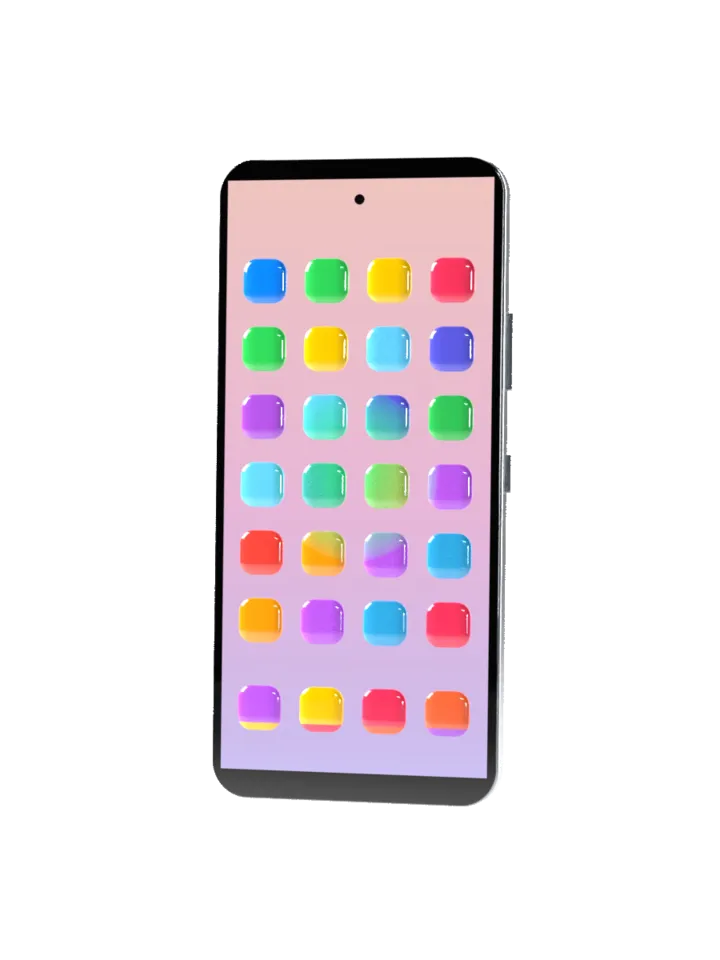
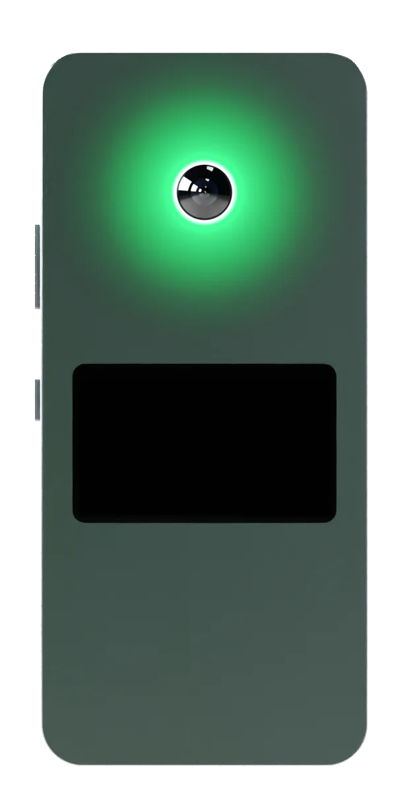

<title>Rethink Phone</title>
<meta name="claude:viewport-fit-sides" content="cover">
<meta name="description" content="Rethink Phone: your digital chief of staff. Running today on a OnePlus Nord CE 3 Lite.">
<link rel="preconnect" href="https://fonts.googleapis.com">
<link rel="preconnect" href="https://fonts.gstatic.com" crossorigin>
<link rel="stylesheet" href="https://fonts.googleapis.com/css2?family=Familjen+Grotesk:wght@400..700&family=Martian+Mono:wdth,wght@87.5,400..500&display=swap">
<style>
/* Layout: a tech experiment, presented on white. The story comes first (what a phone was for, what it became,
   what it should be), told in sticky scenes; then the design, the proof, the platform and the build log.
   Phones are dark objects on a bright stage. Footnotes back every claim. */
:root {
  --bg: #ffffff;
  --bg-2: #ffffff;
  --fg: #111112;
  --mute: #6e6e73;
  --line: #d2d2d7;
  --hair: #e8e8ed;
  --unlit: #d2d2d7;
  --green: #111112;     /* labels and marks are ink; the only colour on the page is the light */
  --light: #2fe383;     /* the device light: only ever shown glowing, never as text or a flat fill */
  --glow: rgba(47,227,131,.55);
  --blue: #8e8e93;      /* the other voice, in grey */
  --red: #e5352b;
  --sheen: #111112;
  --font-display: "Familjen Grotesk", "Helvetica Neue", Arial, sans-serif;   /* ink traps, after phone-book type */
  --font-body: "Familjen Grotesk", "Helvetica Neue", Arial, sans-serif;
  --font-mono: "Martian Mono", ui-monospace, "SF Mono", Menlo, monospace;    /* set narrow, for labels and figures */
  --ease: cubic-bezier(.19, 1, .22, 1);
  --gut-l: max(16px, env(safe-area-inset-left, 0px));
  --gut-r: max(16px, env(safe-area-inset-right, 0px));
  color-scheme: light;
}
* { box-sizing: border-box; }
html { background: var(--bg); scroll-behavior: smooth; }
[class], code, pre { font-synthesis: none; }
body { margin: 0; background: var(--bg); color: var(--fg); font: 400 17px/1.5 var(--font-body); font-feature-settings: "kern", "liga"; -webkit-font-smoothing: antialiased; overflow-x: clip; }
body::before { content: ""; position: fixed; inset: 0 0 auto; height: env(safe-area-inset-top, 0px); z-index: 60; background: var(--bg); }
a { color: inherit; }
:focus-visible { outline: 2px solid var(--fg); outline-offset: 3px; border-radius: 6px; }
.wrap { width: 100%; max-width: 1180px; margin: 0 auto; padding-left: var(--gut-l); padding-right: var(--gut-r); }
h1, h2, h3, h4 { font-family: var(--font-display); margin: 0; text-wrap: balance; letter-spacing: -0.028em; font-kerning: normal; }
.times, .codecard, pre, code, .lines li .ts, .bub.t, .incall .hd span { font-variation-settings: "wdth" 87.5; }
p { margin: 0; }
.sheen { }  /* one face, one style: no accent italics */
/* Oscar, a yellow lab, plays fetch with the light (footer wordmark) */
.sign { position: relative; }
.sign .ball { position: absolute; left: 0; top: 0; width: 0.132em; aspect-ratio: 1; border-radius: 50%; will-change: transform;
  background: radial-gradient(circle at 50% 45%, #f2fff7 0 16%, var(--light) 48%, #12a656 100%);
  box-shadow: 0 0 .05em .01em var(--glow), 0 0 .25em .04em rgba(47,227,131,.35), 0 0 .6em .1em rgba(47,227,131,.18); }
.oscar { position: absolute; left: 0; top: 0; width: 0.6em; height: 0.4em; overflow: visible; will-change: transform; pointer-events: none; }
.oscar .leg { transform-box: view-box; }
.oscar .lf, .oscar .lf2 { transform-origin: 84px 50px; }
.oscar .lb, .oscar .lb2 { transform-origin: 40px 50px; }
.oscar.run .lf, .oscar.run .lb2 { animation: oscar-a .3s linear infinite; }
.oscar.run .lf2, .oscar.run .lb { animation: oscar-b .3s linear infinite; }
.oscar.run .bod { animation: oscar-bob .3s ease-in-out infinite; }
.oscar .tail { transform-box: view-box; transform-origin: 26px 40px; }
.oscar.carry .tongue { display: none; }
.oscar.wag .tail { animation: oscar-wag .18s ease-in-out infinite alternate; }
.oscar .ear { transform-box: view-box; transform-origin: 89px 11px; }
.oscar.run .ear { animation: oscar-ear .3s ease-in-out infinite alternate; }
@keyframes oscar-a { 0%, 100% { transform: rotate(34deg); } 50% { transform: rotate(-30deg); } }
@keyframes oscar-b { 0%, 100% { transform: rotate(-30deg); } 50% { transform: rotate(32deg); } }
@keyframes oscar-bob { 0%, 100% { transform: translateY(0); } 50% { transform: translateY(-3px); } }
@keyframes oscar-wag { from { transform: rotate(-14deg); } to { transform: rotate(18deg); } }
@keyframes oscar-ear { from { transform: rotate(-8deg); } to { transform: rotate(14deg); } }
/* the i's dot is the device light */
.sign .i { position: relative; display: inline-block; }
.sign .i i { position: absolute; left: 50%; top: 0.099em; width: 0.132em; aspect-ratio: 1; transform: translateX(-50%); border-radius: 50%;
  background: radial-gradient(circle at 50% 45%, #f2fff7 0 16%, var(--light) 48%, #12a656 100%);
  box-shadow: 0 0 .05em .01em var(--glow), 0 0 .25em .04em rgba(47,227,131,.35), 0 0 .6em .1em rgba(47,227,131,.18); }
.lamp { display: inline-block; width: 8px; height: 8px; border-radius: 50%; background: radial-gradient(circle, #f2fff7 0 18%, var(--light) 45%, #12a656 100%); box-shadow: 0 0 6px 1px var(--glow), 0 0 16px 2px rgba(47,227,131,.25); flex: none; }
.eyebrow { font: 600 0.95rem/1.2 var(--font-body); letter-spacing: -0.005em; color: var(--fg); display: flex; align-items: center; gap: 10px; }
.eyebrow::before { content: none; }
.head.center .eyebrow, .hero .eyebrow, .finale .eyebrow { justify-content: center; }

.lead { font: 500 clamp(1.15rem, 1.85vw, 1.45rem)/1.4 var(--font-body); letter-spacing: -0.012em; color: var(--mute); max-width: 34ch; text-wrap: pretty; }
.lead b { color: var(--fg); font-weight: 600; }
sup.fn { font: 500 0.55em var(--font-body); color: var(--mute); margin-left: 1px; vertical-align: super; line-height: 0; }
sup.fn a { text-decoration: none; }

/* ---------- nav ---------- */
.nav { position: sticky; top: env(safe-area-inset-top, 0px); z-index: 50; background: color-mix(in srgb, var(--bg) 78%, transparent); backdrop-filter: saturate(180%) blur(20px); -webkit-backdrop-filter: saturate(180%) blur(20px); border-bottom: 1px solid color-mix(in srgb, var(--line) 60%, transparent); }
.nav .wrap { display: flex; align-items: center; gap: 28px; height: 52px; }
.brand { display: flex; align-items: center; gap: 9px; font: 600 1.02rem var(--font-display); letter-spacing: -0.02em; text-decoration: none; }
.mark { width: 14px; height: 22px; flex: none; display: block; }
.mark rect { fill: none; stroke: currentColor; stroke-width: 1.6; }
.mark .ey { fill: url(#eyeg); }
.nav nav { display: flex; gap: 26px; margin-left: auto; font-size: 0.8rem; color: #424245; }
.nav nav a { text-decoration: none; }
.nav nav a:hover { color: var(--fg); }
.pill { display: inline-flex; align-items: center; gap: 8px; padding: 7px 14px; border-radius: 999px; background: var(--fg); transition: background .3s var(--ease), transform .3s var(--ease); color: #fff; font: 600 0.78rem var(--font-body); text-decoration: none; border: 0; cursor: pointer; white-space: nowrap; }
.pill.big { padding: 15px 26px; font-size: 0.95rem; font-weight: 500; }
.pill:hover { background: #3a3a3c; }
.pill.ink { background: var(--fg); }
.link { color: var(--fg); text-decoration: none; font-weight: 500; background: linear-gradient(currentColor, currentColor) 0 100% / 100% 1px no-repeat; padding-bottom: 2px; transition: background-size .5s var(--ease); }
.link:hover { background-size: 0 1px; background-position: 100% 100%; }
@media (max-width: 860px) { .nav nav { display: none; } .nav .pill { margin-left: auto; } }
.pill .gh { width: 15px; height: 15px; fill: currentColor; flex: none; }

/* ---------- phone object (dark hardware on a light stage) ---------- */
.phone { --w: clamp(230px, 24vw, 310px); width: var(--w); aspect-ratio: 9 / 19.6; border-radius: calc(var(--w) * 0.16); padding: calc(var(--w) * 0.035);
  background: linear-gradient(145deg, #5a5b60 0%, #26272b 28%, #111214 60%, #3a3b40 100%);
  box-shadow: 0 0 0 1px #6b6c71 inset, 0 0 0 1px #1a1a1c, 0 50px 90px -30px rgba(0,0,0,.45), 0 20px 40px -20px rgba(0,0,0,.3);
  position: relative; flex: none; max-width: 100%; }
.phone::before { content: ""; position: absolute; right: -2.5px; top: 22%; width: 2.5px; height: 11%; border-radius: 0 2px 2px 0; background: linear-gradient(90deg, #2a2b2f, #55565b); box-shadow: 0 calc(var(--w) * 0.36) 0 -1px #3a3b40; }
.screen::after { content: ""; position: absolute; inset: 0; background: linear-gradient(118deg, rgba(255,255,255,.10) 0%, rgba(255,255,255,0) 34%), linear-gradient(0deg, rgba(255,255,255,.03), rgba(255,255,255,0) 30%); pointer-events: none; z-index: 6; border-radius: inherit; }
.screen { position: relative; height: 100%; border-radius: calc(var(--w) * 0.13); overflow: hidden; background: #000; container-type: inline-size; color: #f5f5f7; }
.screen::before { content: ""; position: absolute; top: 2.6%; left: 50%; width: 3.6%; aspect-ratio: 1; transform: translateX(-50%); border-radius: 50%; background: #0d0d0f; box-shadow: 0 0 0 1.5px #1a1a1d; z-index: 5; }
.sb { position: absolute; top: 2.4%; left: 9%; right: 9%; display: flex; justify-content: space-between; font: 600 4.6cqw var(--font-body); color: #fff; z-index: 4; }
.layer { position: absolute; inset: 0; transition: opacity .6s ease, transform .6s cubic-bezier(.2,.7,.2,1); }

/* home: the new kind of phone */
.home { display: flex; flex-direction: column; padding: 18% 6% 7%; background: radial-gradient(120% 60% at 50% 30%, #0f3b2a 0%, #071a14 45%, #000 85%); }
.home .greet { font: 600 7.6cqw/1.1 var(--font-display); letter-spacing: -0.03em; text-align: center; }
.home .greet span { display: block; font: 500 3.8cqw var(--font-body); color: #a1a1a6; letter-spacing: 0; margin-top: 1.4cqw; }
.orb { width: 36cqw; aspect-ratio: 1; margin: 7cqw auto 6cqw; border-radius: 50%; position: relative; flex: none;
  background: radial-gradient(circle closest-side, #ffffff 0 3%, #c6ffdf 7%, #3ce886 17%, #12a656 32%, rgba(16, 140, 70, .45) 55%, rgba(16, 140, 70, .14) 78%, rgba(16, 140, 70, 0) 100%);
  animation: breathe 3.6s ease-in-out infinite; }
@keyframes breathe { 50% { filter: brightness(1.18) saturate(1.1); } }
.hcards { display: grid; gap: 2.2cqw; }
.hcard { background: rgba(255,255,255,.08); border-radius: 4.4cqw; padding: 3cqw 3.6cqw; display: grid; gap: .6cqw; }
.hcard b { font: 600 3.8cqw var(--font-body); }
.hcard span { font: 400 3.4cqw/1.35 var(--font-body); color: #c7c7cc; }
.ask { margin-top: auto; display: flex; align-items: center; gap: 2.4cqw; padding: 3cqw 4cqw; border-radius: 99px; background: rgba(255,255,255,.12); font: 500 3.8cqw var(--font-body); color: #d2d2d7; }
.ask i { width: 6cqw; height: 6cqw; border-radius: 50%; background: linear-gradient(135deg, #34d06a, #0a84ff); flex: none; }

/* incoming */
.ring { display: flex; flex-direction: column; align-items: center; padding: 22% 8% 14%; background: radial-gradient(120% 70% at 50% 0%, #17321f 0%, #050806 55%, #000 100%); }
.ring .who { font: 600 10.5cqw/1.05 var(--font-display); letter-spacing: -0.03em; margin-top: 6cqw; }
.ring .sub { font: 500 4.6cqw var(--font-body); color: #a1a1a6; margin-top: 2cqw; }
.ring .avatar { width: 26cqw; aspect-ratio: 1; border-radius: 50%; background: linear-gradient(160deg, #6b6f78, #33363c); display: grid; place-items: center; font: 600 10cqw var(--font-display); color: #e8e8ed; }
.ring .tag { margin-top: 6cqw; padding: 1.6cqw 4cqw; border-radius: 99px; background: rgba(48,209,88,.18); color: #30d158; font: 600 3.8cqw var(--font-body); display: flex; align-items: center; gap: 2cqw; }
.ring .tag::before { content: ""; width: 2cqw; height: 2cqw; border-radius: 50%; background: #30d158; animation: blink 1.4s infinite; }
.ring .btns { margin-top: auto; width: 100%; display: flex; justify-content: space-between; padding: 0 6%; }
.ring .btn { width: 19cqw; aspect-ratio: 1; border-radius: 50%; display: grid; place-items: center; position: relative; }
.ring .btn svg { width: 45%; height: 45%; fill: #fff; }
.ring .btn.no { background: #ff453a; }
.ring .btn.no svg { transform: rotate(135deg); }
.ring .btn.yes { background: #30d158; }
.ring .btn.yes::before, .ring .btn.yes::after { content: ""; position: absolute; inset: 0; border-radius: 50%; border: 2px solid #30d158; animation: ripple 2s infinite; }
.ring .btn.yes::after { animation-delay: 1s; }
@keyframes ripple { from { transform: scale(1); opacity: .7; } to { transform: scale(1.9); opacity: 0; } }
@keyframes blink { 50% { opacity: .25; } }

/* in call */
.incall { display: flex; flex-direction: column; padding: 17% 6% 8%; background: linear-gradient(180deg, #0b1410 0%, #000 50%); }
.incall .hd { text-align: center; }
.incall .hd b { display: block; font: 600 7.4cqw var(--font-display); letter-spacing: -0.02em; }
.incall .hd span { font: 500 3.8cqw var(--font-mono); color: #30d158; }
.incall .orb { width: 30cqw; margin: 5cqw auto 4cqw; }
.bubbles { flex: 1; display: flex; flex-direction: column; justify-content: flex-end; gap: 2cqw; overflow: hidden; -webkit-mask-image: linear-gradient(180deg, transparent, #000 22%); mask-image: linear-gradient(180deg, transparent, #000 22%); }
.bub { font: 500 3.9cqw/1.35 var(--font-body); padding: 2.4cqw 3.6cqw; border-radius: 4.4cqw; max-width: 84%; flex: none; }
.bub.a { align-self: flex-start; background: #1c1c1f; border-bottom-left-radius: 1.2cqw; }
.bub.c { align-self: flex-end; background: #0a3d24; color: #d9ffe9; border-bottom-right-radius: 1.2cqw; }
.bub.t { align-self: center; border: 1px dashed #333; color: #8e8e93; font: 500 3.2cqw var(--font-mono); border-radius: 99px; padding: 1.2cqw 3cqw; }
.bub.off { display: none; }

/* summary */
.note { display: flex; flex-direction: column; padding: 20% 5% 8%; background: radial-gradient(140% 60% at 50% 100%, #0f2a3a 0%, #000 60%); }
.note .clock { text-align: center; font: 600 17cqw/1 var(--font-display); letter-spacing: -0.04em; color: #e8f6ff; }
.note .date { text-align: center; font: 500 4cqw var(--font-body); color: #a1a1a6; margin-bottom: 8cqw; }
.ncard { background: rgba(60,60,66,.75); border-radius: 5cqw; padding: 3.6cqw 4cqw; display: grid; gap: 1.2cqw; }
.ncard .top { display: flex; align-items: center; gap: 2cqw; font: 600 3.3cqw var(--font-body); color: #a1a1a6; text-transform: uppercase; letter-spacing: .04em; }
.ncard .top i { width: 4.4cqw; height: 4.4cqw; border-radius: 1.2cqw; background: linear-gradient(135deg, #34d06a, #0a84ff); }
.ncard b { font: 600 4.4cqw var(--font-body); }
.ncard p { font: 400 3.9cqw/1.35 var(--font-body); color: #d2d2d7; }
.ncard .acts { display: flex; gap: 2cqw; margin-top: 1cqw; }
.ncard .acts span { flex: 1; text-align: center; padding: 1.8cqw; border-radius: 3cqw; background: #4a4a4f; font: 600 3.4cqw var(--font-body); }

.phone[data-state="ring"] .incall, .phone[data-state="ring"] .note,
.phone[data-state="call"] .ring, .phone[data-state="call"] .note,
.phone[data-state="note"] .ring, .phone[data-state="note"] .incall { opacity: 0; transform: scale(.96); pointer-events: none; }

/* app grids for the story */
.grid-screen { padding: 16% 7% 8%; background: linear-gradient(170deg, #c9d6ff 0%, #e2c9f5 50%, #ffd8c2 100%); display: grid; align-content: start; }
.apps { display: grid; grid-template-columns: repeat(4, minmax(0, 1fr)); gap: 5cqw 5cqw; }
.apps i { aspect-ratio: 1; border-radius: 24%; display: block; position: relative; box-shadow: 0 1px 2px rgba(0,0,0,.15); }
.apps.dense { grid-template-columns: repeat(5, minmax(0, 1fr)); gap: 3.2cqw; }
.apps.dense i { border-radius: 22%; }
.apps i b { position: absolute; top: -18%; right: -18%; min-width: 42%; height: 42%; padding: 0 8%; border-radius: 99px; background: #ff3b30; color: #fff; font: 600 3cqw/1 var(--font-body); display: grid; place-items: center; font-style: normal; box-shadow: 0 0 0 1.5px #fff; }
.grid-screen.busy { background: linear-gradient(170deg, #ffd2cc 0%, #f7c3e6 55%, #d6c8ff 100%); }
.banners { position: absolute; top: 9%; left: 5%; right: 5%; display: grid; gap: 1.8cqw; z-index: 3; }
.banners div { background: rgba(250,250,252,.92); color: #1d1d1f; border-radius: 4cqw; padding: 2.4cqw 3.2cqw; font: 500 3.2cqw/1.3 var(--font-body); box-shadow: 0 6px 16px rgba(0,0,0,.18); }
.banners div b { display: block; font-weight: 600; font-size: 3.4cqw; }

/* ---------- hero ---------- */
.hero { padding-block: clamp(56px, 9vw, 110px) 0; text-align: center; position: relative; overflow: hidden; background: var(--bg); }
.hero .wrap { position: relative; display: flex; flex-direction: column; align-items: center; }
.hero h1 { font-size: clamp(3.4rem, 11.5vw, 9.8rem); font-weight: 500; line-height: 0.92; letter-spacing: -0.045em; margin-top: 22px; }
.ln { display: block; overflow: hidden; padding: 0 0.06em 0.1em; margin-bottom: -0.1em; }
.ln > span { display: inline-block; animation: up 1.4s var(--ease) both; }
@keyframes up { from { transform: translateY(110%); } }
.hero .lead { margin: 28px auto 0; text-align: center; max-width: 32ch; }
.hero .ctas { display: flex; gap: 22px; align-items: center; justify-content: center; margin-top: 30px; flex-wrap: wrap; }
.hero-stage { margin-top: clamp(48px, 7vw, 80px); perspective: 1400px; display: flex; justify-content: center; width: 100%; padding-bottom: clamp(48px, 7vw, 90px); }
.hero-stage .phone { --w: clamp(250px, 30vw, 360px); transform: rotateX(calc(14deg * (1 - var(--hp, 0)))) translateY(calc(30px * (1 - var(--hp, 0)))); transform-origin: 50% 100%; }
@keyframes rise { from { opacity: 0; transform: translateY(18px); } to { opacity: 1; transform: none; } }
@keyframes lift { from { opacity: 0; transform: translateY(120px) rotateX(30deg); } }
.in { animation: rise 1.3s var(--ease) both; }
.phone-in { animation: lift 1.8s .45s var(--ease) both; position: relative; }
.phone-in::after { content: ""; position: absolute; left: 12%; right: 12%; bottom: -34px; height: 44px; background: radial-gradient(closest-side, rgba(0,0,0,.22), transparent); z-index: -1; }

.fig { display: flex; gap: 14px; justify-content: center; font: 400 0.8rem/1.5 var(--font-body); color: var(--mute); margin-top: 18px; text-align: left; }
.fig b { font-weight: 500; color: var(--fg); white-space: nowrap; }
.fig span { max-width: 52ch; }
.fig.left { justify-content: flex-start; }

/* hero turntable */
#hero { height: 320vh; background: var(--bg); }
#hero .pin { display: block; }
.hero-copy { position: absolute; inset: 0 0 auto; padding-top: clamp(40px, 7vh, 90px); padding-left: var(--gut-l); padding-right: var(--gut-r); text-align: center; display: flex; flex-direction: column; align-items: center; z-index: 2; will-change: transform, opacity; }
.hero-copy h1 { font-size: clamp(3.2rem, min(10vw, 13vh), 9rem); font-weight: 500; line-height: 0.92; letter-spacing: -0.045em; margin-top: 18px; }
.hero-copy .lead { margin: 22px auto 0; text-align: center; max-width: 32ch; }
.hero-copy .ctas { display: flex; gap: 26px; align-items: center; justify-content: center; margin-top: 26px; flex-wrap: wrap; }
.turn { position: absolute; left: 50%; top: 50%; width: min(67svh, 96vw, 690px); aspect-ratio: 4 / 5; transform: translate(-50%, calc(-50% + (1 - var(--k, 0)) * 52svh)) scale(calc(0.86 + 0.14 * var(--k, 0))); will-change: transform; z-index: 1; }
.turn img, .turn canvas { position: absolute; inset: 0; width: 100%; height: 100%; object-fit: contain; }
.turn canvas { opacity: 0; }
.turn.live canvas { opacity: 1; }
.turn.live img { visibility: hidden; }
.callout { position: absolute; width: 15em; display: grid; gap: 6px; padding-top: 12px; border-top: 1px solid var(--fg); font-size: 0.88rem; line-height: 1.45; color: var(--mute); opacity: 0; transform: translateY(14px); transition: opacity .6s var(--ease), transform .6s var(--ease); }
.callout b { font: 500 1.5rem/1 var(--font-display); letter-spacing: -0.03em; color: var(--fg); }
.callout.on { opacity: 1; transform: none; }
.c1 { right: 100%; top: 38%; margin-right: -4%; }
.c2 { left: 100%; top: 30%; margin-left: -6%; }
.c3 { right: 100%; top: 52%; margin-right: -4%; }
.hero-fig { position: absolute; left: 0; right: 0; bottom: 18px; margin: 0; padding-inline: 16px; opacity: 0; transition: opacity .6s var(--ease); }
.hero-fig.on { opacity: 1; }
@media (max-width: 900px) {
  .c3 { display: none; }
  .c1, .c2, .c3 { left: 50%; right: auto; top: auto; bottom: 4%; margin: 0; transform: translate(-50%, 14px); background: color-mix(in srgb, var(--bg) 88%, transparent); padding: 12px 14px; width: min(18em, 80vw); }
  .callout.on { transform: translate(-50%, 0); }
}

/* ---------- scenes ---------- */
.scene { position: relative; }
.scene > .pin { position: sticky; top: 0; height: 100vh; height: 100svh; display: flex; align-items: center; overflow: hidden; }
.split { display: grid; grid-template-columns: minmax(0, 1fr) auto; gap: clamp(32px, 6vw, 96px); align-items: center; }
.steps { position: relative; min-height: 15em; }
.step { position: absolute; inset: 0 0 auto 0; transition: opacity .6s ease, transform .6s cubic-bezier(.2,.7,.2,1); }
.step:not(.on) { opacity: 0; transform: translateY(24px); pointer-events: none; }
.step .k { font: 600 0.95rem var(--font-body); font-variant-numeric: tabular-nums; color: var(--mute); }
.step h2 { font-size: clamp(2.6rem, 6.2vw, 5.4rem); font-weight: 600; line-height: 0.98; margin: 14px 0 22px; }
.split > div:first-child { display: flex; flex-direction: column-reverse; }
.progress { display: flex; gap: 8px; margin: 0 0 28px; }
.progress i { height: 3px; width: 34px; border-radius: 3px; background: var(--hair); overflow: hidden; position: relative; }
.progress i::after { content: ""; position: absolute; inset: 0; background: var(--fg); transform-origin: left; transform: scaleX(var(--f, 0)); }
@media (max-width: 760px) {
  .split { grid-template-columns: 1fr; justify-items: center; gap: 22px; }
  .split .phone, .split .visual { order: -1; }
  .split .phone { --w: min(50vw, 200px); }
  .steps { min-height: 11.5em; width: 100%; text-align: center; }
  .step h2 { font-size: 2.2rem; margin: 8px 0 10px; }
  .step .lead { margin-inline: auto; font-size: 1.02rem; }
  .progress { justify-content: center; margin: 0 0 12px; }
}

/* story scene */
#story { height: 520vh; background: var(--bg); }
.visual { position: relative; width: clamp(240px, 30vw, 360px); aspect-ratio: 0.62; flex: none; display: grid; place-items: center; }
.visual .year { position: absolute; inset: auto 0 50% 0; transform: translateY(50%); text-align: center; font: 600 clamp(5rem, 14vw, 12rem)/1 var(--font-display); letter-spacing: -0.045em; color: rgba(29,29,31,.06); z-index: 0; white-space: nowrap; transition: opacity .6s; pointer-events: none; }
.visual .v { position: absolute; inset: 0; display: grid; place-items: center; transition: opacity .7s ease, transform .7s cubic-bezier(.2,.7,.2,1); z-index: 1; }
.visual .v:not(.on) { opacity: 0; transform: scale(.92) translateY(20px); pointer-events: none; }
.visual .v .phone { --w: clamp(200px, 24vw, 280px); }
.handset { width: 82%; height: auto; }
.handset path { fill: var(--fg); }
.mstage { position: absolute; left: 50%; top: 50%; width: 165%; aspect-ratio: 3 / 4; transform: translate(-50%, -50%); container-type: inline-size; }
.v.meld img, .v.meld canvas { position: absolute; inset: 0; width: 100%; height: 100%; max-width: none; }
.notifs { position: absolute; left: 31.2%; width: 37.8%; top: 19.5%; display: grid; gap: 0.9cqw; transform: perspective(60cqw) rotateY(-9deg); transform-origin: 50% 50%; }
.notifs div { display: grid; grid-template-columns: 2.6cqw minmax(0, 1fr) auto; gap: 1cqw; align-items: center; padding: 1.1cqw 1.3cqw; border-radius: 1.7cqw; background: rgba(250, 250, 252, .9); box-shadow: 0 0.6cqw 1.6cqw rgba(0, 0, 0, .14); color: #1d1d1f;
  opacity: 0; transform: translateY(-40%) scale(.96); transition: opacity .5s var(--ease), transform .5s var(--ease); }
.notifs div.on { opacity: calc(1 - var(--m, 0)); transform: translateY(calc(var(--m, 0) * var(--dy))) scale(calc(1 - .85 * var(--m, 0))); transition-duration: .35s; }
.notifs i { width: 2.6cqw; height: 2.6cqw; border-radius: 0.7cqw; display: block; }
.notifs p { margin: 0; min-width: 0; display: grid; gap: 0.15cqw; }
.notifs b { font: 600 1.2cqw/1.2 var(--font-body); white-space: nowrap; overflow: hidden; text-overflow: ellipsis; }
.notifs span { font: 400 1.1cqw/1.25 var(--font-body); color: #3a3a3c; white-space: nowrap; overflow: hidden; text-overflow: ellipsis; }
.notifs em { font: 400 1cqw var(--font-body); font-style: normal; color: #8e8e93; align-self: start; }
.v.meld canvas { opacity: 0; }
.v.meld.live canvas { opacity: 1; }
.v.meld.live img { visibility: hidden; }
@media (max-width: 760px) { .visual { width: min(56vw, 220px); } .visual .v .phone { --w: min(46vw, 180px); } .visual .year { font-size: 5rem; } }

/* ---------- the back: a live teletype on the render ---------- */
.back-band { padding-block: clamp(90px, 12vw, 150px); }
.back-grid { display: grid; grid-template-columns: minmax(0, 0.9fr) minmax(0, 1.1fr); gap: clamp(32px, 6vw, 96px); align-items: center; }
.back-grid .copy { display: grid; gap: 22px; align-content: center; }
.back-grid h2 { font-size: clamp(2.6rem, 6.2vw, 5.4rem); font-weight: 600; line-height: 0.98; }
.back-spec { list-style: none; margin: 10px 0 0; padding: 0; display: grid; gap: 0; max-width: 30em; }
.back-spec li { display: grid; grid-template-columns: 7.5em 1fr; gap: 16px; padding: 14px 0; border-top: 1px solid var(--hair); font-size: 0.95rem; color: var(--mute); }
.back-spec li b { color: var(--fg); font-weight: 600; }
.backshot { position: relative; width: min(100%, 400px); justify-self: center; aspect-ratio: 620 / 1230; }
.backshot img { position: absolute; inset: 0; width: 100%; height: 100%; }
.tty { position: absolute; left: 19.3%; top: 45.65%; width: 61.4%; height: 18.05%; container-type: inline-size; }
.tty .in { position: absolute; inset: 11.5cqw 0 0; overflow: hidden; -webkit-mask-image: linear-gradient(transparent, #000 35%); mask-image: linear-gradient(transparent, #000 35%); display: flex; flex-direction: column; justify-content: flex-end;
  padding: 0 5cqw 4.5cqw; box-sizing: border-box; color: var(--light); font: 400 4.7cqw/1.36 var(--font-mono); font-variation-settings: "wdth" 87.5;
  text-shadow: 0 0 .5cqw rgba(47,227,131,.55), 0 0 1.6cqw rgba(47,227,131,.22); }
.tty, .tty .hd { color: var(--light); font-family: var(--font-mono); font-variation-settings: "wdth" 87.5; text-shadow: 0 0 .5cqw rgba(47,227,131,.55); }
.tty .hd { position: absolute; top: 4cqw; left: 5cqw; right: 5cqw; display: flex; justify-content: space-between; font-size: 3.4cqw; letter-spacing: .06em; opacity: .75; padding-bottom: 1.2cqw; border-bottom: 1px dashed rgba(47,227,131,.4); }
.tty .in .r { display: grid; grid-template-columns: 21cqw 1fr; column-gap: 1.6cqw; transition: opacity .6s; }
.tty .in .r .k { opacity: .55; }
.tty .in .r.th { opacity: .55; }
.tty .in .r.old { opacity: .32; }
.tty .in .cur::after { content: ""; display: inline-block; width: .6em; height: 1.05em; margin-left: .12em; vertical-align: -.18em; background: var(--light); box-shadow: 0 0 1cqw rgba(47,227,131,.8); animation: blink 1s steps(1) infinite; }
@media (max-width: 860px) { .back-grid { grid-template-columns: 1fr; } .backshot { width: min(78%, 340px); margin-bottom: 40px !important; } }

/* answer scene: rendered flip, teletype driven by scroll */
.flipfig { position: relative; margin: 0; width: clamp(230px, min(28vw, 40svh), 390px); aspect-ratio: 620 / 1230; }
.flipfig img, .flipfig canvas { position: absolute; inset: 0; width: 100%; height: 100%; }
.flipfig canvas { opacity: 0; }
.flipfig.live canvas { opacity: 1; }
.flipfig.live #flipImg { visibility: hidden; }
.flipfig .flipoff { opacity: 0; transition: opacity .5s; }
.flipfig .tty { opacity: 0; transition: opacity .4s; }
.flipfig.back .tty { opacity: 1; }

/* statement */
#statement { height: 240vh; background: var(--bg); }
.words { font: 600 clamp(2rem, 5.2vw, 4.6rem)/1.06 var(--font-display); letter-spacing: -0.04em; text-wrap: balance; max-width: 1100px; }
.words span { color: var(--unlit); transition: color .25s linear; }
.words span.lit { color: var(--fg); }


/* ---------- bands ---------- */
section.band { padding-block: clamp(90px, 14vw, 170px); }
.alt { background: var(--bg); border-top: 1px solid var(--hair); }
.head { display: grid; gap: 20px; margin-bottom: clamp(40px, 6vw, 72px); }
.head h2 { font-size: clamp(2.8rem, 7.5vw, 6.2rem); font-weight: 600; line-height: 0.95; }
.head.center { text-align: center; justify-items: center; }
.head.center .lead { text-align: center; }
.reveal { transition: opacity 1s ease, transform 1s cubic-bezier(.2,.7,.2,1); }
.js .reveal.pre { opacity: 0.001; transform: translateY(50px); }

/* principles */
.principles { display: grid; grid-template-columns: repeat(3, minmax(0, 1fr)); gap: 16px; }
.pr { background: var(--bg); border: 1px solid var(--line); border-radius: 22px; padding: clamp(26px, 3.4vw, 42px); display: flex; flex-direction: column; gap: 16px; min-width: 0; }
.pr .n { font: 500 0.82rem var(--font-body); font-variant-numeric: tabular-nums; color: var(--mute); }
.pr .from { font: 500 1rem var(--font-display); color: var(--mute); text-decoration: line-through; text-decoration-color: var(--red); text-decoration-thickness: 2px; }
.pr h3 { font-size: clamp(1.8rem, 3vw, 2.5rem); font-weight: 600; line-height: 1.02; }
.pr p { color: var(--mute); line-height: 1.5; }
.pr a { margin-top: auto; }
@media (max-width: 900px) { .principles { grid-template-columns: 1fr; } }

/* answer scene */
#answer { height: 420vh; background: var(--bg); }

/* hear it */
.player { background: var(--bg); border-radius: 24px; overflow: hidden; display: grid; grid-template-columns: minmax(0, 1fr) minmax(0, 1.1fr); box-shadow: 0 1px 0 var(--hair), 0 30px 80px -40px rgba(0,0,0,.25); border: 1px solid var(--hair); }
.pl-left { padding: clamp(24px, 4vw, 48px); display: flex; flex-direction: column; gap: 26px; min-width: 0; }
.pl-left .meta { display: grid; gap: 4px; }
.pl-left .meta b { font: 600 1.6rem var(--font-display); letter-spacing: -0.02em; }
.pl-left .meta span { font: 500 0.78rem var(--font-body); font-variant-numeric: tabular-nums; color: var(--mute); }
canvas#scope { width: 100%; height: 120px; display: block; }
.ctrl { display: flex; align-items: center; gap: 18px; }
.playbtn { width: 72px; height: 72px; border-radius: 50%; border: 0; background: var(--fg); display: grid; place-items: center; cursor: pointer; flex: none; transition: transform .2s; }
.playbtn:hover { transform: scale(1.05); }
.playbtn svg { width: 26px; height: 26px; fill: #fff; }
.scrub { flex: 1; display: grid; gap: 8px; min-width: 0; }
.bar { height: 4px; border-radius: 4px; background: var(--hair); position: relative; cursor: pointer; }
.bar i { position: absolute; inset: 0 auto 0 0; width: 0; border-radius: 4px; background: var(--sheen); }
.times { display: flex; justify-content: space-between; font: 500 0.72rem var(--font-mono); color: var(--mute); font-variant-numeric: tabular-nums; }
.legend { display: flex; gap: 18px; font-size: 0.8rem; color: var(--mute); }
.legend span { display: inline-flex; align-items: center; gap: 7px; }
.legend i { width: 9px; height: 9px; border-radius: 50%; }
.lines { list-style: none; margin: 0; padding: clamp(20px, 3vw, 36px); display: flex; flex-direction: column; gap: 4px; max-height: 560px; overflow-y: auto; border-left: 1px solid var(--hair); position: relative; min-width: 0; background: var(--bg); }
.lines li { display: grid; grid-template-columns: 3.4em minmax(0, 1fr); gap: 12px; padding: 10px 12px; border-radius: 14px; cursor: pointer; color: #86868b; transition: color .3s, background .3s; font-size: 1rem; line-height: 1.45; }
.lines li .ts { font: 500 0.72rem/2 var(--font-mono); font-variant-numeric: tabular-nums; }
.lines li .who { display: block; font: 600 0.8rem var(--font-body); margin-bottom: 2px; }
.lines li.agent .who { color: var(--green); }
.lines li.caller .who { color: var(--blue); }
.lines li.now { color: var(--fg); background: var(--bg); box-shadow: 0 1px 3px rgba(0,0,0,.08); }
.lines li.done { color: #424245; }
@media (max-width: 900px) { .player { grid-template-columns: 1fr; } .lines { border-left: 0; border-top: 1px solid var(--hair); max-height: 420px; } }

.nums { display: grid; grid-template-columns: repeat(3, minmax(0, 1fr)); margin-top: clamp(60px, 9vw, 110px); }
.nums div { padding: 0 clamp(10px, 2vw, 28px); display: grid; gap: 10px; align-content: start; }
.nums div + div { border-left: 1px solid var(--line); }
.nums b { font: 600 clamp(2.6rem, 6.2vw, 5.2rem)/0.95 var(--font-display); letter-spacing: -0.04em; font-variant-numeric: tabular-nums; white-space: nowrap; }
.nums span { font-size: 0.92rem; color: var(--mute); line-height: 1.4; max-width: 22ch; }
@media (max-width: 760px) { .nums { grid-template-columns: repeat(2, minmax(0, 1fr)); row-gap: 40px; } .nums div:nth-child(3) { border-left: 0; } }

/* engineering scene */
#engine { height: 380vh; background: var(--bg); }
#engine .pin .wrap { display: grid; gap: clamp(20px, 3vw, 40px); }
#engine .top { display: grid; grid-template-columns: minmax(0, 1.1fr) minmax(0, 1fr); gap: 32px; align-items: end; }
#engine h2 { font-size: clamp(2.4rem, 5.6vw, 4.8rem); font-weight: 600; line-height: 0.98; margin-top: 10px; }
.capt { position: relative; min-height: 6.6em; }
.capt p { position: absolute; inset: 0 0 auto 0; font: 500 clamp(1rem, 1.6vw, 1.25rem)/1.45 var(--font-display); color: var(--mute); letter-spacing: -0.01em; transition: opacity .5s, transform .5s; }
.capt p b { color: var(--fg); font-weight: 600; }
.capt p:not(.on) { opacity: 0; transform: translateY(14px); }
.diagram svg { width: 100%; height: auto; display: block; overflow: visible; }
.diagram .node rect { fill: var(--bg-2); stroke: var(--line); stroke-width: 1.5; transition: stroke .4s, fill .4s; }
.diagram .node.on rect { stroke: var(--fg); fill: #f5f5f7; }
.diagram .node.on.blue rect { stroke: var(--blue); fill: #fafafa; }
.diagram text { fill: var(--fg); }
.diagram .t1 { font: 600 21px var(--font-display); letter-spacing: -0.01em; }
.diagram .t2 { font: 500 14px var(--font-body); font-variant-numeric: tabular-nums; fill: var(--mute); }
.diagram .rail { fill: none; stroke: var(--hair); stroke-width: 3; }
.diagram .flow { fill: none; stroke-width: 3; stroke-linecap: round; }
.diagram .flow.down { stroke: var(--blue); }
.diagram .flow.up { stroke: var(--green); }
.diagram .dead { fill: none; stroke: var(--red); stroke-width: 2.5; stroke-dasharray: 6 7; opacity: 0; transition: opacity .4s; }
.diagram .deadlab { font: 500 14px var(--font-body); font-variant-numeric: tabular-nums; fill: var(--red); opacity: 0; transition: opacity .4s; }
.codecard { background: #1d1d1f; border-radius: 20px; padding: 18px 22px; font: 400 clamp(0.68rem, 1.1vw, 0.82rem)/1.65 var(--font-mono); color: #d2d2d7; overflow-x: auto; white-space: pre; min-width: 0; }
.codecard .c { color: #8e8e93; }
.codecard .k { color: #ff7ab2; }
.codecard .s { color: #5fe08a; }
.codecard .h { background: rgba(95,224,138,.18); color: #fff; border-radius: 4px; padding: 0 3px; }
@media (max-width: 860px) { #engine .top { grid-template-columns: 1fr; gap: 14px; } .capt { min-height: 7.5em; } #engine .codecard { display: none; } }

/* platform */
#platform { overflow: hidden; }
.prog { display: grid; grid-template-columns: minmax(0, 0.9fr) minmax(0, 1.1fr); gap: clamp(28px, 5vw, 72px); align-items: center; }
.prog h2 { font-size: clamp(3rem, 8vw, 6.4rem); font-weight: 600; line-height: .92; margin-top: 14px; }
.prog .lead { margin-top: 26px; }
.chat { background: var(--bg); border-radius: 22px; padding: 26px; display: flex; flex-direction: column; gap: 12px; min-width: 0; box-shadow: 0 30px 80px -40px rgba(0,0,0,.25); }
.chat .m { max-width: 86%; padding: 12px 16px; border-radius: 20px; font-size: 0.98rem; line-height: 1.45; }
.chat .u { align-self: flex-end; background: var(--fg); color: #fff; border-bottom-right-radius: 6px; }
.chat .r { align-self: flex-start; background: #e9e9eb; border-bottom-left-radius: 6px; }
.chat .made { align-self: stretch; border: 1px solid var(--hair); border-radius: 18px; padding: 14px 16px; display: grid; gap: 6px; background: var(--bg-2); }
.chat .made .tt { display: flex; align-items: center; gap: 10px; font: 600 0.95rem var(--font-display); }
.chat .made .tt i { width: 22px; height: 22px; border-radius: 7px; background: var(--sheen); flex: none; }
.chat .made > span { font: 500 0.75rem var(--font-body); font-variant-numeric: tabular-nums; color: var(--mute); }
.chat .made .on { margin-left: auto; width: 38px; height: 22px; border-radius: 99px; background: var(--fg); position: relative; flex: none; }
.chat .made .on::after { content: ""; position: absolute; right: 2px; top: 2px; width: 18px; height: 18px; border-radius: 50%; background: #fff; box-shadow: 0 1px 2px rgba(0,0,0,.2); }
.layers { display: grid; margin-top: 32px; }
.layers div { display: grid; grid-template-columns: 2.6em minmax(0, 1fr); gap: 12px; align-items: baseline; padding: 12px 0; border-top: 1px solid var(--line); }
.layers b { font: 500 0.78rem var(--font-body); font-variant-numeric: tabular-nums; color: var(--green); }
.layers span { color: var(--fg); font-size: 0.98rem; }
.layers span em { font-style: normal; color: var(--mute); }
@media (max-width: 860px) { .prog { grid-template-columns: 1fr; } }
.rail-head { display: flex; justify-content: space-between; align-items: end; gap: 20px; margin-top: clamp(80px, 12vw, 140px); margin-bottom: 28px; flex-wrap: wrap; }
.rail-head h3 { font-size: clamp(1.8rem, 3.6vw, 2.8rem); font-weight: 600; line-height: 1; }
.arrows { display: flex; gap: 10px; }
.arrows button { width: 40px; height: 40px; border-radius: 50%; border: 0; background: #e8e8ed; color: var(--fg); cursor: pointer; display: grid; place-items: center; }
.arrows button:hover { background: #dcdce1; }
.arrows svg { width: 16px; height: 16px; fill: none; stroke: currentColor; stroke-width: 2; }
.gallery { --edge: max(16px, env(safe-area-inset-left, 0px), calc((100vw - 1180px) / 2 + 16px)); display: grid; grid-auto-flow: column; grid-auto-columns: min(340px, 82vw); gap: 20px; overflow-x: auto; scroll-snap-type: x mandatory; padding-bottom: 30px; scrollbar-width: none; padding-left: var(--edge); padding-right: var(--gut-r); scroll-padding-left: var(--edge); }
.gallery::-webkit-scrollbar { display: none; }
.ext { scroll-snap-align: start; background: var(--bg); border-radius: 20px; padding: 26px; display: flex; flex-direction: column; gap: 14px; min-height: 380px; min-width: 0; box-shadow: 0 1px 2px rgba(0,0,0,.04); }
.ext .when { font: 500 0.74rem var(--font-body); font-variant-numeric: tabular-nums; color: var(--green); letter-spacing: 0.02em; }
.ext h4 { font: 600 1.55rem/1.08 var(--font-display); letter-spacing: -0.03em; }
.ext p { color: var(--mute); font-size: 0.95rem; line-height: 1.45; }
.ext pre { margin: auto 0 0; background: #1d1d1f; border-radius: 14px; padding: 14px; font: 400 0.7rem/1.6 var(--font-mono); color: #c7c7cc; overflow-x: auto; }
.ext pre .k { color: #ff7ab2; }
.ext pre .s { color: #5fe08a; }

/* demos */
.demos { display: grid; grid-template-columns: repeat(3, minmax(0, 1fr)); gap: 20px; }
@media (max-width: 760px) { .demos { grid-template-columns: minmax(0, 1fr); gap: 44px; } }
.demo { display: flex; flex-direction: column; gap: 12px; min-width: 0; }
.demo video { width: 100%; aspect-ratio: 4 / 5; object-fit: contain; background: #000; border-radius: 20px; display: block; }
.demo .when { font: 500 0.74rem var(--font-body); font-variant-numeric: tabular-nums; color: var(--mute); letter-spacing: 0.02em; margin-top: 6px; }
.demo h3 { font: 600 1.45rem/1.1 var(--font-display); letter-spacing: -0.03em; }
.demo p { color: var(--mute); font-size: 0.95rem; line-height: 1.45; }
.demo .link { align-self: flex-start; }
.demos-all { margin-top: clamp(32px, 5vw, 56px); text-align: center; }


/* built for nerds */
.nerds { display: grid; grid-template-columns: repeat(3, minmax(0, 1fr)); gap: clamp(36px, 4vw, 56px) clamp(24px, 4vw, 56px); }
.nerds > div { display: grid; gap: 10px; align-content: start; min-width: 0; }
.nerds h3 { font-size: 1.45rem; font-weight: 600; letter-spacing: -0.025em; }
.nerds p { color: var(--mute); line-height: 1.5; }
.nerds code { justify-self: start; max-width: 100%; overflow-x: auto; white-space: nowrap; margin-top: 4px; padding: 8px 12px; border-radius: 10px; background: #1d1d1f; color: #c7c7cc; font: 400 0.78rem/1.4 var(--font-mono); }
@media (max-width: 860px) { .nerds { grid-template-columns: 1fr; } }

/* build log */
.road { display: grid; grid-template-columns: repeat(6, minmax(0, 1fr)); position: relative; }
.road::before { content: ""; position: absolute; left: 0; right: 0; top: 7px; height: 2px; background: var(--line); }
.road::after { content: ""; position: absolute; left: 0; width: calc(100% / 6 * 5); top: 7px; height: 2px; background: var(--sheen); }
.road div { padding-right: 18px; display: grid; gap: 8px; align-content: start; position: relative; padding-top: 34px; min-width: 0; }
.road div::before { content: ""; position: absolute; top: 0; left: 0; width: 16px; height: 16px; border-radius: 50%; background: var(--bg-2); border: 2px solid var(--line); z-index: 1; }
.road div.done::before { background: var(--light); border-color: #12a656; box-shadow: 0 0 8px 1px var(--glow); }
.road div.next::before { border-color: var(--fg); background: var(--bg); }
.road b { font: 500 0.78rem var(--font-body); font-variant-numeric: tabular-nums; color: var(--mute); }
.road div.done b { color: var(--green); }
.road h4 { font: 600 1.12rem/1.2 var(--font-display); letter-spacing: -0.02em; }
.road p { font-size: 0.88rem; color: var(--mute); line-height: 1.45; }
.road h4 a { color: inherit; text-decoration: none; }
.road h4 a:hover { text-decoration: underline; text-underline-offset: 3px; }
.loglink { margin-top: 40px; }
.chat > .link { align-self: flex-start; }
.chat .made code { font: 400 0.72rem/1.5 var(--font-mono); color: var(--fg); overflow-wrap: anywhere; }
@media (max-width: 900px) {
  .road { grid-template-columns: 1fr; gap: 26px; padding-left: 30px; }
  .road::before { left: 7px; right: auto; top: 0; bottom: 0; width: 2px; height: auto; }
  .road::after { left: 7px; top: 0; width: 2px; height: 84%; }
  .road div { padding-top: 0; }
  .road div::before { left: -30px; top: 2px; }
}

/* finale */
.finale { text-align: center; padding-block: clamp(110px, 16vw, 210px); position: relative; overflow: hidden; background: var(--bg); }
.finale .wrap { position: relative; display: grid; justify-items: center; gap: 26px; }
.finale h2 { font-size: clamp(3.2rem, 11vw, 9rem); font-weight: 500; line-height: 0.92; letter-spacing: -0.045em; }
.finale .lead { text-align: center; }
.flat { width: min(760px, 100%); height: auto; margin: -40px 0 -30px; }
.founder { display: flex; align-items: center; gap: 14px; text-align: left; margin-top: 10px; }
.founder i { width: 48px; height: 48px; border-radius: 50%; background: var(--bg-2); border: 1px solid var(--line); display: grid; place-items: center; font: 600 1.1rem var(--font-display); font-style: normal; flex: none; }
.founder span { font-size: 0.92rem; color: var(--mute); line-height: 1.4; }
.founder b { color: var(--fg); font-weight: 600; }
.founder a { color: inherit; text-decoration: underline; text-decoration-color: var(--line); text-underline-offset: 3px; }
.founder a:hover { text-decoration-color: var(--fg); }
.mail { display: inline-flex; align-items: center; gap: 4px; padding: 6px 6px 6px 20px; border-radius: 99px; background: var(--bg-2); border: 1px solid var(--hair); max-width: 100%; }
.mail code { font: 500 0.95rem var(--font-mono); user-select: all; overflow: hidden; text-overflow: ellipsis; min-width: 0; }

footer { background: var(--bg); border-top: 1px solid var(--hair); padding-block: 28px 44px; color: var(--mute); font-size: 0.74rem; line-height: 1.55; }
footer ol { margin: 0 0 22px; padding-left: 1.2em; display: grid; gap: 8px; max-width: 980px; }
footer { padding-bottom: 0; overflow: hidden; }
.sign { font: 500 clamp(5rem, 24vw, 22rem)/0.78 var(--font-display); letter-spacing: -0.055em; color: var(--fg); text-align: center; margin-top: clamp(40px, 6vw, 80px); transform: translateY(0.12em); white-space: nowrap; user-select: none; }
footer .base { display: flex; justify-content: space-between; gap: 16px; flex-wrap: wrap; padding-top: 18px; border-top: 1px solid var(--line); }

@media (prefers-reduced-motion: reduce) {
  *, *::before, *::after { animation: none !important; transition: none !important; }
  .js .reveal.pre { opacity: 1; transform: none; }
  html { scroll-behavior: auto; }
}
</style>

<svg width="0" height="0" style="position:absolute" aria-hidden="true">
  <defs>
    <radialGradient id="eyeg"><stop offset="0" stop-color="#eafff2"/><stop offset=".25" stop-color="#3ce886"/><stop offset=".6" stop-color="#0c7a3e"/><stop offset="1" stop-color="#0c7a3e" stop-opacity=".15"/></radialGradient>
    <linearGradient id="g1" x1="0" y1="0" x2="1" y2="1"><stop offset="0" stop-color="#111112"/><stop offset="1" stop-color="#111112"/></linearGradient>
    <symbol id="handset" viewBox="0 0 24 24"><path d="M6.6 10.8a15.1 15.1 0 0 0 6.6 6.6l2.2-2.2a1 1 0 0 1 1-.25 11.4 11.4 0 0 0 3.6.57 1 1 0 0 1 1 1V20a1 1 0 0 1-1 1A17 17 0 0 1 3 4a1 1 0 0 1 1-1h3.5a1 1 0 0 1 1 1c0 1.25.2 2.45.57 3.57a1 1 0 0 1-.25 1z"/></symbol>
  </defs>
</svg>

<header class="nav">
  <div class="wrap">
    <a class="brand" href="#top" aria-label="Rethink Phone home"><svg class="mark" viewBox="0 0 14 22" aria-hidden="true"><rect x="0.8" y="0.8" width="12.4" height="20.4" rx="3.2"/><circle class="ey" cx="7" cy="11" r="3"/></svg>Rethink</a>
    <nav aria-label="Sections">
      <a href="#hero">Design</a>
      <a href="#story">Why</a>
      <a href="#demos">Demos</a>
      <a href="#principles">Principles</a>
      <a href="#answer">Calls</a>
      <a href="#hear">Hear it</a>
    </nav>
    <a class="pill" href="https://github.com/gauravtiwari5050/rethink" rel="noopener" target="_blank"><svg class="gh" viewBox="0 0 16 16" aria-hidden="true"><path d="M8 0C3.58 0 0 3.58 0 8c0 3.54 2.29 6.53 5.47 7.59.4.07.55-.17.55-.38 0-.19-.01-.82-.01-1.49-2.01.37-2.53-.49-2.69-.94-.09-.23-.48-.94-.82-1.13-.28-.15-.68-.52-.01-.53.63-.01 1.08.58 1.23.82.72 1.21 1.87.87 2.33.66.07-.52.28-.87.51-1.07-1.78-.2-3.64-.89-3.64-3.95 0-.87.31-1.59.82-2.15-.08-.2-.36-1.02.08-2.12 0 0 .67-.21 2.2.82.64-.18 1.32-.27 2-.27.68 0 1.36.09 2 .27 1.53-1.04 2.2-.82 2.2-.82.44 1.1.16 1.92.08 2.12.51.56.82 1.27.82 2.15 0 3.07-1.87 3.75-3.65 3.95.29.25.54.73.54 1.48 0 1.07-.01 1.93-.01 2.2 0 .21.15.46.55.38A8.01 8.01 0 0 0 16 8c0-4.42-3.58-8-8-8z"/></svg>GitHub</a>
  </div>
</header>

<main id="top">

<!-- ================= HERO ================= -->
<section class="scene" id="hero" data-scene="hero">
  <div class="pin">
    <div class="hero-copy" id="heroCopy">
      <p class="eyebrow in" style="animation-delay:.05s"><span class="lamp"></span>Rethink Phone</p>
      <h1><span class="ln"><span style="animation-delay:.12s">A new kind</span></span><span class="ln"><span style="animation-delay:.24s">of <span class="sheen">phone.</span></span></span></h1>
      <p class="lead in" style="animation-delay:.4s">Your digital chief of staff.</p>
      <div class="ctas in" style="animation-delay:.55s">
        <a class="pill big" href="#story">Watch the story</a>
        <a class="link" href="#hear">Hear it answer a real call</a>
      </div>
    </div>
    <div class="turn" id="turn">
      
      <canvas id="turnCv" width="800" height="1000" aria-hidden="true"></canvas>
      <p class="callout c1" id="c1"><b>8.7 mm</b><span>Bead‑blasted aluminium frame.</span></p>
      <p class="callout c2" id="c2"><b>One lens, one light</b><span>Glows while Rethink is on a call.</span></p>
      <p class="callout c3" id="c3"><b>Teletype</b><span>Prints what Rethink hears and thinks, live.</span></p>
    </div>
    <p class="fig hero-fig" id="heroFig"><b>Fig. 1</b><span>Concept render of Rethink hardware. The software runs today on a OnePlus Nord CE 3 Lite.<sup class="fn"><a href="#fn4">4</a></sup></span></p>
  </div>
</section>

<!-- ================= STORY ================= -->
<section class="scene" id="story" data-scene="story">
  <div class="pin">
    <div class="wrap split">
      <div>
        <div class="steps">
          <div class="step on">
            <p class="k">1876</p>
            <h2>The phone did<br>one thing.</h2>
            <p class="lead">You picked it up and <b>talked to a person.</b></p>
          </div>
          <div class="step">
            <p class="k">2007</p>
            <h2>Then it became<br>a computer.</h2>
            <p class="lead">A screen, a grid of apps, the internet in your pocket.</p>
          </div>
          <div class="step">
            <p class="k">Today</p>
            <h2>Now it’s<br>a second job.</h2>
            <p class="lead">Dozens of apps, notifications and calls, <b>all waiting on you.</b></p>
          </div>
          <div class="step">
            <p class="k">From here</p>
            <h2>So we started<br><span class="sheen">over.</span></h2>
            <p class="lead"><b>Your chief of staff</b> does the work, starting with your calls.</p>
          </div>
        </div>
        <div class="progress" aria-hidden="true"><i></i><i></i><i></i><i></i></div>
      </div>

      <div class="visual" aria-hidden="true">
        <div class="year" id="year">1876</div>
        <div class="v on">
          <svg class="handset" viewBox="0 0 24 24"><use href="#handset"/></svg>
        </div>
        <div class="v meld">
          <div class="mstage">
            
            <canvas id="meldCv" width="720" height="960" aria-hidden="true"></canvas>
            <div class="notifs" id="notifs" aria-hidden="true">
              <div style="--dy: 38cqw"><i style="background:#8e8e93"></i><p><b>Missed call · Unknown</b><span>+91 80 4718 2290</span></p><em>now</em></div>
              <div style="--dy: 32cqw"><i style="background:#ff453a"></i><p><b>Bank · 2 new</b><span>Your KYC is pending. Update now</span></p><em>2m</em></div>
              <div style="--dy: 26cqw"><i style="background:#30d158"></i><p><b>WhatsApp · 47 new</b><span>Family, Office, Society +6 more</span></p><em>5m</em></div>
              <div style="--dy: 20cqw"><i style="background:#0a84ff"></i><p><b>12 apps</b><span>want your attention</span></p><em>9m</em></div>
            </div>
          </div>
        </div>
      </div>
    </div>
  </div>
</section>

<!-- ================= DEMOS ================= -->
<section class="band alt" id="demos">
  <div class="wrap">
    <div class="head center reveal">
      <p class="eyebrow"><span class="lamp"></span>Demos</p>
      <h2>Working today.</h2>
    </div>
    <div class="demos reveal">
      <article class="demo">
        <video controls preload="none" playsinline poster="/assets/experiments/03/poster.jpg" src="/assets/experiments/03/blinkit-order.mp4"></video>
        <p class="when">No. 03 · 22 Nov 2026</p>
        <h3>A phone call orders groceries</h3>
        <p>I call and ask for milk. Claude shops on Blinkit in the phone’s browser, reads back the cart, and orders when I say yes.</p>
        <a class="link" href="/experiments/a-phone-call-orders-groceries/">Experiment 03 ›</a>
      </article>
      <article class="demo">
        <video controls preload="none" playsinline poster="/assets/experiments/02/poster.jpg" src="/assets/experiments/02/claude-on-the-phone.mp4"></video>
        <p class="when">No. 02 · 22 Nov 2026</p>
        <h3>Claude runs on the phone, with root</h3>
        <p>Claude Code in a Debian chroot on the handset. Asked to call Gaurav, it queries contacts and dials with <code>am start</code>.</p>
        <a class="link" href="/experiments/claude-runs-on-the-phone/">Experiment 02 ›</a>
      </article>
      <article class="demo">
        <video controls preload="none" playsinline poster="/assets/experiments/01/poster.jpg" src="/assets/experiments/01/claude-calls.mp4"></video>
        <p class="when">No. 01 · 22 Nov 2026</p>
        <h3>Claude operates the phone</h3>
        <p>An MCP server on the phone: read the screen, place a call, hang up. Every tool call in an audit log.</p>
        <a class="link" href="/experiments/claude-operates-the-phone/">Experiment 01 ›</a>
      </article>
    </div>
    <p class="demos-all reveal"><a class="link" href="/experiments/">All experiments ›</a></p>
  </div>
</section>

<!-- ================= STATEMENT ================= -->
<section class="scene" id="statement" data-scene="statement">
  <div class="pin">
    <div class="wrap">
      <p class="words" id="words">You carry a supercomputer in your pocket. About time we *treat *it *like *one.</p>
    </div>
  </div>
</section>

<!-- ================= PRINCIPLES ================= -->
<section class="band" id="principles">
  <div class="wrap">
    <div class="head center reveal">
      <p class="eyebrow">Principles</p>
      <h2>Three ideas.</h2>
    </div>
    <div class="principles">
      <div class="pr reveal">
        <p class="n">Principle 1</p>
        <p class="from">You work for your phone</p>
        <h3>Your phone works for <span class="sheen">you.</span></h3>
        <p>It answers calls, takes messages and books appointments, then tells you what happened.</p>
        <a class="link" href="#answer">See a call ›</a>
      </div>
      <div class="pr reveal">
        <p class="n">Principle 2</p>
        <p class="from">Tap through a grid of apps</p>
        <h3>Talking is the <span class="sheen">interface.</span></h3>
        <p>Rethink reaches into WhatsApp, calls and notifications for you. Apps are still there when you want them.</p>
        <a class="link" href="#hear">Hear it ›</a>
      </div>
      <div class="pr reveal">
        <p class="n">Principle 3</p>
        <p class="from">A walled garden</p>
        <h3>A phone you can <span class="sheen">program.</span></h3>
        <p>Describe a routine and Rethink turns it into an extension that runs on your phone. Share it with a link.</p>
        <a class="link" href="#platform">Build one ›</a>
      </div>
    </div>
  </div>
</section>

<!-- ================= ANSWER SCENE ================= -->
<section class="scene" id="answer" data-scene="answer">
  <div class="pin">
    <div class="wrap split">
      <div>
        <div class="steps">
          <div class="step on">
            <p class="k">Principle 1, in practice</p>
            <h2>Your phone rings.<br>You’re busy.</h2>
            <p class="lead">In a meeting, on a scooter, with a patient. Today that call goes to voicemail, and nobody leaves voicemail.</p>
          </div>
          <div class="step">
            <p class="k">Answer</p>
            <h2>Rethink <span class="sheen">answers.</span></h2>
            <p class="lead">It picks up on the second ring, says it’s your assistant, and asks how it can help.</p>
          </div>
          <div class="step">
            <p class="k">Converse</p>
            <h2>It listens.<br>It thinks. It talks.</h2>
            <p class="lead">Replies in about a second. It looks things up, takes messages and books slots.</p>
          </div>
          <div class="step">
            <p class="k">Brief</p>
            <h2>Then it tells you.</h2>
            <p class="lead">One note: <b>who called, what they wanted, what to do next.</b></p>
          </div>
        </div>
        <div class="progress" aria-hidden="true"><i></i><i></i><i></i><i></i></div>
      </div>

      <figure class="flipfig" id="flipFig" aria-label="Rethink Phone ringing, then turned over: the light around the camera comes on and the teletype prints the call">
        
        <canvas id="flipCv" width="620" height="1230"></canvas>
        
        <div class="tty" id="tty2" aria-hidden="true"><div class="hd"><span id="tty2Hd">RETHINK · ON A CALL</span><span id="tty2Clock">00:00</span></div><div class="in" id="tty2In"></div></div>
      </figure>
    </div>
  </div>
</section>

<!-- ================= THE BACK ================= -->
<section class="band back-band" id="back">
  <div class="wrap back-grid">
    <div class="copy reveal">
      <p class="eyebrow">The back</p>
      <h2>Turn it over.<br>Watch it think.</h2>
      <ul class="back-spec">
        <li><b>One lens</b><span>The light around it means Rethink is on a call.</span></li>
        <li><b>Teletype</b><span>A low‑power strip display: caller, plan and reply, in real time.</span></li>
        <li><b>Face down</b><span>Read the call without picking it up.</span></li>
      </ul>
    </div>
    <figure class="backshot" style="margin:0">
      
      <div class="tty" id="tty" aria-hidden="true"><div class="hd"><span>RETHINK · ON A CALL</span><span id="ttyClock">00:00</span></div><div class="in" id="ttyIn"></div></div>
      <figcaption class="fig" style="position:absolute;left:0;right:0;top:100%"><b>Fig.</b><span>Concept render. The display is typing live in this page; the call is illustrative.</span></figcaption>
    </figure>
  </div>
</section>

<!-- ================= HEAR IT ================= -->
<section class="band alt" id="hear">
  <div class="wrap">
    <div class="head reveal">
      <p class="eyebrow">Proof, not a mockup</p>
      <h2>Hear it answer<br><span class="sheen">a real call.</span></h2>
      <p class="lead">Recorded on a real Airtel line. Gaurav Tiwari called from a second phone.<sup class="fn"><a href="#fn3">3</a></sup></p>
    </div>

    <div class="player reveal">
      <div class="pl-left">
        <div class="meta">
          <b>Incoming call · 0:53</b>
          <span>OnePlus Nord CE 3 Lite · LineageOS 24 · VoLTE · 16 kHz</span>
        </div>
        <canvas id="scope" aria-hidden="true"></canvas>
        <div class="ctrl">
          <button class="playbtn" id="play" aria-label="Play recording">
            <svg id="icoPlay" viewBox="0 0 24 24"><path d="M8 5v14l11-7z"/></svg>
            <svg id="icoPause" viewBox="0 0 24 24" hidden><path d="M7 5h4v14H7zM13 5h4v14h-4z"/></svg>
          </button>
          <div class="scrub">
            <div class="bar" id="bar" role="slider" aria-label="Seek" tabindex="0" aria-valuemin="0" aria-valuemax="53" aria-valuenow="0"><i id="barFill"></i></div>
            <div class="times"><span id="tNow">0:00</span><span>0:53</span></div>
          </div>
        </div>
        <div class="legend"><span><i style="background:var(--green)"></i>Rethink</span><span><i style="background:var(--blue)"></i>Caller</span></div>
        <audio id="audio" src="assets/first-call.mp4" preload="metadata"></audio>
      </div>
      <ol class="lines" id="lines"></ol>
    </div>
    <p class="fig left"><b>Fig. 2</b><span>Unedited audio from both sides of the call, mixed for listening. Tap any line to jump to it.</span></p>

    <div class="nums">
      <div class="reveal"><b data-to="1" data-pre="~" data-suf=" s">~1 s</b><span>from the caller’s last word to the assistant’s reply<sup class="fn"><a href="#fn1">1</a></sup></span></div>
      <div class="reveal"><b data-to="0">0</b><span>changes to the ROM, kernel, or modem firmware</span></div>
      <div class="reveal"><b data-to="5" data-pre="$0.0">$0.05</b><span>per minute of live conversation<sup class="fn"><a href="#fn2">2</a></sup></span></div>
    </div>
  </div>
</section>

<!-- ================= ENGINEERING ================= -->
<section class="scene" id="engine" data-scene="engine">
  <div class="pin">
    <div class="wrap">
      <div class="top">
        <div>
          <p class="eyebrow">Engineering</p>
          <h2>How does it <span class="sheen">work?</span></h2>
        </div>
        <div class="capt" id="capt">
          <p class="on">Android 13 added system APIs that let a privileged app <b>hear the caller</b> and <b>speak into the call</b>. On paper.</p>
          <p>Hearing works. The caller’s voice comes off the modem as clean <b>16 kHz audio</b> and streams to the voice model.</p>
          <p>But the official injection track routes to <b>voice_tx</b>, which on this Qualcomm chip <b>never reaches the modem</b>. The caller hears silence.</p>
          <p>The fix: a media track pinned to the telephony device. Android’s audio policy then picks the <b>in‑call music</b> path, which the modem mixes into the call. <b>The caller hears Rethink.</b></p>
        </div>
      </div>

      <div class="diagram">
        <svg viewBox="0 0 1100 330" role="img" aria-label="Call audio path. Caller to modem to Rethink's downlink extraction to GPT-Live, then back through the in-call music output to the modem and the caller. The official voice_tx path dead-ends.">
          <path class="rail" d="M150 95 H950"/>
          <path class="rail" d="M950 235 H150"/>
          <path class="flow down" id="pDown" d="M150 95 H950"/>
          <path class="flow up" id="pUp" d="M950 235 H150"/>
          <path class="dead" id="dead" d="M695 275 V308 H520"/>
          <text class="deadlab" id="deadlab" x="505" y="313" text-anchor="end">voice_tx — never reaches the modem</text>
          <g class="node"><rect x="20" y="45" width="190" height="240" rx="26"/><text class="t1" x="115" y="155" text-anchor="middle">Caller</text><text class="t2" x="115" y="182" text-anchor="middle">any phone</text></g>
          <g class="node blue"><rect x="290" y="55" width="210" height="80" rx="20"/><text class="t1" x="395" y="92" text-anchor="middle">Modem</text><text class="t2" x="395" y="117" text-anchor="middle">VoLTE downlink</text></g>
          <g class="node blue"><rect x="580" y="55" width="230" height="80" rx="20"/><text class="t1" x="695" y="92" text-anchor="middle">Rethink hears</text><text class="t2" x="695" y="117" text-anchor="middle">DownlinkExtraction</text></g>
          <g class="node"><rect x="890" y="45" width="190" height="240" rx="26"/><text class="t1" x="985" y="155" text-anchor="middle">GPT‑Live</text><text class="t2" x="985" y="182" text-anchor="middle">voice model</text></g>
          <g class="node"><rect x="580" y="195" width="230" height="80" rx="20"/><text class="t1" x="695" y="232" text-anchor="middle">Rethink speaks</text><text class="t2" x="695" y="257" text-anchor="middle">INCALL_MUSIC out</text></g>
          <g class="node"><rect x="290" y="195" width="210" height="80" rx="20"/><text class="t1" x="395" y="232" text-anchor="middle">Modem</text><text class="t2" x="395" y="257" text-anchor="middle">uplink mix</text></g>
          <circle id="dotDown" r="9" fill="#8e8e93" opacity="0"/>
          <circle id="dotUp" r="9" fill="#0b7a3e" opacity="0"/>
        </svg>
        <p class="fig left"><b>Fig. 3</b><span>Call audio path on Snapdragon 695 (SM6375), stock LineageOS 24. Scroll to follow the voice.</span></p>
      </div>

      <div class="codecard"><span class="c">// CallBridge.java · the line that let the caller hear us</span>
<span class="k">AudioTrack</span> t = <span class="k">new</span> AudioTrack.Builder()
    .setAudioAttributes(attrs(<span class="s">USAGE_MEDIA</span>, <span class="s">CONTENT_TYPE_SPEECH</span>))
    .setAudioFormat(pcm16(<span class="s">16_000</span>)).build();
<span class="h">t.setPreferredDevice(telephonyTx);</span>   <span class="c">// policy now selects AUDIO_OUTPUT_FLAG_INCALL_MUSIC</span></div>
    </div>
  </div>
</section>

<!-- ================= PLATFORM ================= -->
<section class="band alt" id="platform">
  <div class="wrap">
    <div class="prog">
      <div class="reveal">
        <p class="eyebrow">Principle 3 · Platform</p>
        <h2>Program&shy;mable.<br><span class="sheen">By talking.</span></h2>
        <p class="lead">iOS and Android don’t let you script your own phone. Rethink does. An agent runs on the phone itself, with root, and you tell it what to do in plain words. Next, it will keep what you ask for as an <b>extension</b> that runs on a trigger, with the permissions you approve.</p>
        <div class="layers">
          <div><b>L6</b><span>Shared extensions <em>· install one from a friend · not yet</em></span></div>
          <div><b>L5</b><span>Extensions you create by chatting <em>· not yet</em></span></div>
          <div><b>L4</b><span>Triggers <em>· incoming calls work today; time, message and place are next</em></span></div>
          <div><b>L3</b><span>Agent runtime on the phone <em>· Claude Code in a small Debian</em></span></div>
          <div><b>L2</b><span>Phone powers <em>· 13 tools over MCP, or root</em></span></div>
          <div><b>L1</b><span>LineageOS 24 <em>· rooted debugging on a stock Nord CE 3 Lite</em></span></div>
        </div>
      </div>
      <div class="chat reveal" aria-label="A real request to Claude on the phone, and the commands it ran">
        <div class="m u">Can you call Gaurav</div>
        <div class="made">
          <div class="tt"><i></i>What Claude ran, from the phone’s log</div>
          <span><code>16:18:10&nbsp; content query --uri content://com.android.contacts/data/phones</code></span>
          <span><code>16:18:16&nbsp; am start -a android.intent.action.CALL -d tel:+91XXXXXXXXXX</code></span>
        </div>
        <a class="link" href="/experiments/claude-runs-on-the-phone/">Watch it place the call ›</a>
      </div>
    </div>
  </div>

  <div class="rail-head wrap">
    <h3>Working today.<br><span style="color:var(--mute)">Each one has a video and a log.</span></h3>
    <div class="arrows"><button id="prev" aria-label="Previous"><svg viewBox="0 0 16 16"><path d="M10 3 5 8l5 5"/></svg></button><button id="next" aria-label="Next"><svg viewBox="0 0 16 16"><path d="m6 3 5 5-5 5"/></svg></button></div>
  </div>
  <div class="gallery" id="gallery">
    <article class="ext"><p class="when">on · incoming call</p><h4>Answers your calls</h4><p>Picks up after two seconds, talks to the caller in their language, takes a message, and leaves you a summary. <a class="link" href="#hear">Hear a real call ›</a></p><pre><span class="k">[18:31:09]</span> call connected
<span class="k">[18:34:29]</span> call ended by agent
           after 200 s
<span class="k">[18:34:34]</span> summary:
  <span class="s">Gaurav — Blinkit milk order</span></pre></article>
    <article class="ext"><p class="when">experiment 01 · mcp server</p><h4>Claude operates the phone</h4><p>Claude gets 13 tools on the phone: read the screen, tap, type, call, text. Every tool call lands in an audit log. <a class="link" href="/experiments/claude-operates-the-phone/">Experiment 01 ›</a></p><pre><span class="k">14:05:00</span> get_screen
  <span class="s">{screenshot: true}</span>
<span class="k">14:05:30</span> place_call
  <span class="s">{number: "+91 XXXXX XXXXX"}</span>
<span class="k">14:05:34</span> get_screen</pre></article>
    <article class="ext"><p class="when">experiment 02 · root</p><h4>Claude runs on the phone</h4><p>Claude Code in a small Debian on the phone, with root. Asked to call someone, it looks up the contact and dials. <a class="link" href="/experiments/claude-runs-on-the-phone/">Experiment 02 ›</a></p><pre><span class="k">16:18:10</span> content query --uri
  <span class="s">content://com.android</span>
  <span class="s">.contacts/data/phones</span>
<span class="k">16:18:16</span> am start -a
  <span class="s">android.intent.action.CALL</span>
  -d <span class="s">tel:+91XXXXXXXXXX</span></pre></article>
    <article class="ext"><p class="when">experiment 03 · on a call</p><h4>Orders groceries while you’re on the line</h4><p>You call and ask for milk. Claude shops on blinkit.com in the phone’s browser, reads back the cart, and orders only after you say yes. <a class="link" href="/experiments/a-phone-call-orders-groceries/">Experiment 03 ›</a></p><pre>blinkit_order
  <span class="s">{request: "a carton of milk"}</span>
  <span class="k">→</span> ready · ₹154
    pay on delivery
blinkit_confirm()
  <span class="k">→</span> placed</pre></article>
  </div>
</section>

<!-- ================= BUILT FOR NERDS ================= -->
<section class="band alt" id="nerds">
  <div class="wrap">
    <div class="head center reveal">
      <p class="eyebrow">Under the hood</p>
      <h2>Built for <span class="sheen">nerds.</span></h2>
    </div>
    <div class="nerds">
      <div class="reveal">
        <h3>Stock LineageOS.</h3>
        <p>No custom ROM, kernel or modem patches. Rooted debugging is all it needs.</p>
        <code>adb root</code>
      </div>
      <div class="reveal">
        <h3>Debian in your pocket.</h3>
        <p>Debian 13 in a chroot on the phone, with SSH, Node and Claude Code.</p>
        <code>ssh -p 2222 rethink@phone</code>
      </div>
      <div class="reveal">
        <h3>Root in one command.</h3>
        <p>Runs in Android’s own root shell. Every call is logged.</p>
        <code>sudo android input tap 540 1200</code>
      </div>
      <div class="reveal">
        <h3>Plain MCP.</h3>
        <p>13 tools over Streamable HTTP, served from the phone. Any MCP client works.</p>
        <code>http://127.0.0.1:7071/mcp</code>
      </div>
      <div class="reveal">
        <h3>Pinned and checksummed.</h3>
        <p>Debian 13.7, Claude Code 2.1.330, Chromium 160, Termux 0.118.3, Playwright MCP 0.0.84.</p>
        <code>shasum -a 256 -c -</code>
      </div>
      <div class="reveal">
        <h3>MIT, and reproducible.</h3>
        <p>Every experiment ships its video, raw log and <a class="link" href="/setup/">step-by-step setup</a>. <a class="link" href="https://github.com/gauravtiwari5050/rethink">Source on GitHub</a>.</p>
        <code>./phone/linux/setup.sh</code>
      </div>
    </div>
  </div>
</section>

<!-- ================= PLAN ================= -->
<section class="band" id="plan">
  <div class="wrap">
    <div class="head reveal">
      <p class="eyebrow">Build log</p>
      <h2>What works,<br>and when.</h2>
    </div>
    <div class="road reveal">
      <div class="done"><b>18 Nov 2026</b><h4><a href="#hear">AI answers real calls</a></h4><p>In‑call audio solved on stock LineageOS. Search, messages and hang‑up working.</p></div>
      <div class="done"><b>22 Nov</b><h4><a href="/experiments/claude-operates-the-phone/">Claude operates the phone</a></h4><p>An MCP server on the phone gives Claude 13 tools, with an audit log.</p></div>
      <div class="done"><b>22 Nov</b><h4><a href="/experiments/claude-runs-on-the-phone/">Claude runs on the phone</a></h4><p>Debian and Claude Code on the handset, with root.</p></div>
      <div class="done"><b>22 Nov</b><h4>Off the laptop</h4><p>The call bridge, Claude and the browser all run on the phone now.</p></div>
      <div class="done"><b>22 Nov</b><h4><a href="/experiments/a-phone-call-orders-groceries/">A call orders groceries</a></h4><p>Claude shops in the phone’s browser while you listen on the call.</p></div>
      <div class="next"><b>Next</b><h4>Starts on its own</h4><p>Today a reboot needs a script over USB. Next, the phone boots straight into Rethink.</p></div>
    </div>
    <p class="loglink reveal"><a class="link" href="/experiments/">All experiments ›</a></p>
  </div>
</section>

<!-- ================= FINALE ================= -->
<section class="finale">
  <div class="wrap">
    
    <p class="eyebrow"><span class="lamp"></span>Rethink Phone</p>
    <h2>The phone,<br><span class="sheen">rethought.</span></h2>
    <p class="lead">Answering real calls on a OnePlus Nord CE 3 Lite.<sup class="fn"><a href="#fn4">4</a></sup></p>
    <div class="mail"><code id="mail">gaurav@rethinkphone.tech</code><button class="pill" id="copy">Copy</button></div>
    <div class="founder"><i>G</i><span>Behind this: <b><a href="https://www.linkedin.com/in/gauravtiwari5050/" rel="me noopener" target="_blank">Gaurav Tiwari</a></b><br>Building this in Bangalore with the help of ChatGPT and Claude.</span></div>
  </div>
</section>

</main>

<footer>
  <div class="wrap">
    <ol>
      <li id="fn1">Measured on this phone’s first AI‑answered call: OnePlus Nord CE 3 Lite 5G (CPH2467) on LineageOS 24.0, Airtel VoLTE. Approximate time from the end of the caller’s speech to the start of the assistant’s audio.</li>
      <li id="fn2">OpenAI GPT‑Live list price per minute of streamed audio, November 2026. Tool calls and summaries are billed separately.</li>
      <li id="fn3">Excerpt trimmed to 53 seconds; an 11‑second pause while the assistant tried a lookup was removed. The caller is Gaurav Tiwari, calling from a second phone. That build could not yet search the web; the current build can.</li>
      <li id="fn4">Prototype status: everything runs on the phone, from answering the call to the voice bridge, Claude and the browser. The voice and language models run in OpenAI’s and Anthropic’s clouds. After a reboot, the services are started with a script over USB.</li>
    </ol>
    <div class="base"><span>Rethink Phone · India · 2026</span><span>Built on LineageOS. Not affiliated with OnePlus, OpenAI or Anthropic.</span></div>
  </div>
  <div class="sign" aria-hidden="true">Reth<span class="i">ı<i></i></span>nk</div>
</footer>

<script>
(() => {
  document.documentElement.classList.add('js');
  document.querySelectorAll('.demo video').forEach((v, _, all) => v.addEventListener('play', () => all.forEach((o) => o !== v && o.pause())));
  const reduce = matchMedia('(prefers-reduced-motion: reduce)').matches;
  const clamp = (v, a = 0, b = 1) => Math.min(b, Math.max(a, v));

  /* app icon grids for the story (generic tiles, no real brands) */
  const tones = ['#ff9f0a','#30d158','#0a84ff','#ff375f','#5e5ce6','#64d2ff','#ffd60a','#bf5af2','#ff453a','#32ade6','#ac8e68','#34c759','#ff6b3d','#8e8e93','#00c7be','#5856d6'];
  const fillGrid = (el, n, badges) => { el.innerHTML = Array.from({ length: n }, (_, i) => { const c = tones[(i * 7 + 3) % tones.length]; const b = badges && (i * 5) % 3 === 0 ? `<b>${[3, 12, 1, 99, 7, 24, 5, 2][i % 8]}</b>` : ''; return `<i style="background:linear-gradient(160deg, ${c}, color-mix(in srgb, ${c} 70%, #000))">${b}</i>`; }).join(''); };

  /* reveal on view (only for elements below the fold) */
  if (!reduce && 'IntersectionObserver' in window) {
    const io = new IntersectionObserver((es) => es.forEach((e) => { if (e.isIntersecting) { e.target.classList.remove('pre'); io.unobserve(e.target); } }), { rootMargin: '0px 0px -8% 0px' });
    document.querySelectorAll('.reveal').forEach((el, i) => {
      if (el.getBoundingClientRect().top > innerHeight) { el.classList.add('pre'); el.style.transitionDelay = (i % 3) * 80 + 'ms'; io.observe(el); }
    });
  }

  /* generic stepper for split scenes */
  function stepper(section) {
    const steps = [...section.querySelectorAll('.step')];
    const bars = [...section.querySelectorAll('.progress i')];
    return (p) => {
      const n = steps.length, idx = Math.min(n - 1, Math.floor(p * n));
      steps.forEach((s, i) => s.classList.toggle('on', i === idx));
      bars.forEach((b, i) => b.style.setProperty('--f', clamp(p * n - i)));
      return idx;
    };
  }

  /* story scene */
  const story = document.getElementById('story');
  const storyStep = stepper(story);
  const visuals = [...story.querySelectorAll('.visual .v')];
  const year = document.getElementById('year');
  const years = ['1876', '2007', '2026', 'Now'];
  const meldV = story.querySelector('.v.meld'), meldCv = document.getElementById('meldCv'), mctx = meldCv.getContext('2d');
  const notifBox = document.getElementById('notifs'), notifs = [...notifBox.children];
  const MF = 40, mframes = new Array(MF); let mShown = -1, mWant = 0, mLoaded = false;
  const mpaint = (i) => {
    let j = i; while (j > 0 && !(mframes[j] && mframes[j].complete && mframes[j].naturalWidth)) j--;
    const im = mframes[j]; if (!im || !im.complete || !im.naturalWidth || j === mShown) return;
    mctx.clearRect(0, 0, meldCv.width, meldCv.height); mctx.drawImage(im, 0, 0, meldCv.width, meldCv.height);
    mShown = j; meldV.classList.add('live');
  };
  const mload = () => { if (mLoaded) return; mLoaded = true; for (let i = 0; i < MF; i++) { const im = new Image(); im.decoding = 'async'; im.src = `assets/meld/m${String(i).padStart(3, '0')}.webp`; im.onload = () => { if (i <= mWant) { mShown = -1; mpaint(mWant); } }; mframes[i] = im; } };
  function storyScene(p) {
    const idx = storyStep(p);
    visuals.forEach((v, i) => v.classList.toggle('on', i === Math.min(idx, 1)));
    year.textContent = years[idx];
    if (p > 0.08) mload();
    mWant = Math.round(clamp((p * 4 - 2.75) / 1.1) * (MF - 1)); if (mLoaded) mpaint(mWant);
    const today = p * 4 - 2, nOn = idx >= 2 ? Math.ceil(clamp((today + 0.05) / 0.55) * notifs.length) : 0;
    notifs.forEach((n, i) => n.classList.toggle('on', i < nOn));
    notifBox.style.setProperty('--m', clamp(mWant / 12).toFixed(3));
  }

  /* Oscar plays fetch with the light on the i. Runs along the tops of the letters, bows to pick it up, runs off right,
     comes back from the left with it, drops it home, and leaves. Paused off screen and for reduced motion. */
  (() => {
    const sign = document.querySelector('.sign'), dot = sign && sign.querySelector('.i i');
    if (!dot || matchMedia('(prefers-reduced-motion: reduce)').matches) return;
    const NS = 'http://www.w3.org/2000/svg';
    const dog = document.createElementNS(NS, 'svg');
    dog.setAttribute('viewBox', '0 0 120 80'); dog.setAttribute('class', 'oscar');
    dog.innerHTML = `<title>Oscar</title>
      <g class="pose"><g class="bod">
        <path class="tail" d="M26 40 C16 38 9 33 5 25" fill="none" stroke="#dcae63" stroke-width="7" stroke-linecap="round"/>
        <g class="cr hb"><g class="leg lb2"><rect x="30" y="46" width="12" height="30" rx="6" fill="#c99a52"/></g></g>
        <g class="cr fb"><g class="leg lf2"><rect x="74" y="46" width="12" height="30" rx="6" fill="#c99a52"/></g></g>
        <ellipse cx="56" cy="42" rx="34" ry="18" fill="#e8c07a"/>
        <path d="M30 38 Q56 28 84 34" fill="none" stroke="#f4d89f" stroke-width="5" stroke-linecap="round" opacity=".6"/>
        <path d="M36 56 Q56 62 78 55" fill="none" stroke="#d6a95f" stroke-width="4" stroke-linecap="round" opacity=".6"/>
        <g class="cr hf"><g class="leg lb"><rect x="35" y="46" width="13" height="30" rx="6.5" fill="#e3b46a"/><ellipse cx="42" cy="75" rx="8" ry="3.4" fill="#e3b46a"/></g></g>
        <g class="cr ff"><g class="leg lf"><rect x="80" y="46" width="13" height="30" rx="6.5" fill="#e3b46a"/><ellipse cx="88" cy="75" rx="8" ry="3.4" fill="#e3b46a"/></g></g>
        <path d="M74 32 Q82 16 94 14 L102 32 Q92 46 80 50 Z" fill="#e8c07a"/>
        <path d="M80 30 Q88 38 99 35" fill="none" stroke="var(--light)" stroke-width="3.4" stroke-linecap="round"/>
        <g class="head">
          <ellipse cx="97" cy="20" rx="15" ry="13" fill="#ecc680"/>
          <rect x="99" y="20" width="21" height="14" rx="7" fill="#ecc680"/>
          <path class="tongue" d="M109 33 Q111 41 115 40 Q117 36 115 32 Z" fill="#f08a8a"/>
          <ellipse cx="119" cy="24" rx="3.8" ry="3.3" fill="#2c211a"/>
          <circle cx="101.5" cy="15.5" r="2.2" fill="#2c211a"/>
          <path d="M98 11.5 Q101 10 104.5 11.5" fill="none" stroke="#c99a52" stroke-width="1.4" stroke-linecap="round"/>
          <path d="M106 31.5 Q112 34 118 30.5" fill="none" stroke="#8a5a2b" stroke-width="1.4" stroke-linecap="round"/>
          <path class="ear" d="M89 9 Q81 12 82 28 Q88 33 94 25 Q96 15 89 9 Z" fill="#c99a52"/>
        </g>
      </g></g>`;
    sign.appendChild(dog);
    sign.appendChild(dot); dot.className = 'ball';
    const pose = dog.querySelector('.pose'), head = dog.querySelector('.head');

    const MOUTH = [116, 34], HIP = [41, 50], NECK = [90, 28], LEGTOP = { hb: [36, 50], hf: [41, 50], fb: [80, 50], ff: [86, 50] };
    const rot = ([x, y], [cx, cy], a) => { const c = Math.cos(a), s = Math.sin(a); return [cx + (x - cx) * c - (y - cy) * s, cy + (x - cx) * s + (y - cy) * c]; };
    const HEAD = 0.5; let BODY = 0.45;
    const mouthAt = (b) => rot(rot(MOUTH, NECK, b * HEAD), HIP, b * BODY);
    const crs = [...dog.querySelectorAll('.cr')];
    let em, home, ground, k, stopX, W;
    const measure = () => {
      dot.style.transform = 'none'; dot.style.visibility = 'hidden';
      const sr = sign.getBoundingClientRect(), ir = sign.querySelector('.i').getBoundingClientRect();
      em = parseFloat(getComputedStyle(sign).fontSize);
      home = [ir.left - sr.left + ir.width / 2, ir.top - sr.top + 0.099 * em + 0.066 * em];   // centre of the light on the i
      ground = home[1] - 0.039 * em;                                                          // tops of h and k
      k = (0.4 * em) / 80;                                                                    // px per drawing unit
      W = sr.width;
      dot.style.visibility = '';
      // tip the body just far enough that the mouth meets the light
      const want = (home[1] - (ground - 76 * k)) / k;
      let lo = 0, hi = 1.2; for (let i = 0; i < 30; i++) { BODY = (lo + hi) / 2; mouthAt(1)[1] < want ? (lo = BODY) : (hi = BODY); }
      stopX = home[0] - mouthAt(1)[0] * k;
    };
    const place = (x, b, carrying) => {
      const y = ground - 76 * k;
      dog.style.transform = `translate(${x}px, ${y}px)`;
      const deg = (a) => (a * 180 / Math.PI).toFixed(2);
      pose.setAttribute('transform', `rotate(${deg(b * BODY)} ${HIP[0]} ${HIP[1]})`);
      head.setAttribute('transform', `rotate(${deg(b * HEAD)} ${NECK[0]} ${NECK[1]})`);
      // legs stay upright while the body tips
      for (const g of crs) { const [cx, cy] = LEGTOP[g.classList[1]]; g.setAttribute('transform', `rotate(${deg(-b * BODY)} ${cx} ${cy})`); }
      dog.classList.toggle('carry', carrying);
      const d = 0.132 * em;
      let c = home;
      if (carrying) { const m = mouthAt(b); c = [x + m[0] * k, y + m[1] * k]; }
      dot.style.transform = `translate(${c[0] - d / 2}px, ${c[1] - d / 2}px)`;
    };
    // the loop, in ms: idle, run in, bow and grab, run out with it, off stage, run in with it, bow and drop, run out
    const P = [['idle', 2200], ['in', 1500], ['grab', 900], ['out', 1300], ['away', 900], ['in2', 1500], ['drop', 900], ['out2', 1300]];
    const T = P.reduce((n, p) => n + p[1], 0);
    const easeOut = (u) => 1 - (1 - u) ** 2.2, easeIn = (u) => u ** 1.8, bell = (u) => Math.sin(Math.PI * u);
    const off = () => -0.75 * em, far = () => W + 0.1 * em;
    let t0 = performance.now(), raf = 0, visible = false;
    const frame = (now) => {
      let t = (now - t0) % T, i = 0;
      while (t >= P[i][1]) t -= P[i++][1];
      const [ph, dur] = P[i], u = t / dur;
      let x = off(), b = 0, carrying = false, run = false, wag = false;
      switch (ph) {
        case 'idle': case 'away': x = off(); carrying = ph === 'away'; break;
        case 'in': case 'in2': x = off() + (stopX - off()) * easeOut(u); run = u < 0.92; carrying = ph === 'in2'; break;
        case 'grab': case 'drop': x = stopX; b = bell(u); wag = true; carrying = ph === 'grab' ? u > 0.5 : u < 0.5; break;
        case 'out': case 'out2': x = stopX + (far() - stopX) * easeIn(u); run = true; carrying = ph === 'out'; break;
      }
      dog.classList.toggle('run', run); dog.classList.toggle('wag', wag);
      dog.style.visibility = (ph === 'idle' || ph === 'away') ? 'hidden' : '';
      place(x, b, carrying);
      raf = visible ? requestAnimationFrame(frame) : 0;
    };
    measure(); place(off(), 0, false);
    addEventListener('resize', () => { measure(); });
    document.fonts && document.fonts.ready.then(measure);
    new IntersectionObserver(([e]) => {
      visible = e.isIntersecting;
      if (visible && !raf) { t0 = performance.now(); raf = requestAnimationFrame(frame); }
    }).observe(sign);
    window.__oscar = { frame: (ms) => { visible = false; cancelAnimationFrame(raf); raf = 0; frame(t0 + ms); } };
  })();

  /* statement words */
  const wordsEl = document.getElementById('words');
  wordsEl.innerHTML = wordsEl.textContent.trim().split(/\s+/).map((w) => w.startsWith('*') ? `<span class="g">${w.slice(1)}</span>` : `<span>${w}</span>`).join(' ');
  const wordSpans = [...wordsEl.children];

  /* answer scene: the phone rings, turns over, the light comes on and the teletype prints the call */
  const answer = document.getElementById('answer');
  const answerStep = stepper(answer);
  const flipFig = document.getElementById('flipFig'), flipCv = document.getElementById('flipCv'), fctx = flipCv.getContext('2d');
  const flipOff = document.getElementById('flipOff');
  const ttyIn = document.getElementById('tty2In'), ttyClock = document.getElementById('tty2Clock'), ttyHd = document.getElementById('tty2Hd');
  const GF = 36, gframes = new Array(GF); let gLoaded = false, gShown = -1;
  function gload() {
    if (gLoaded) return; gLoaded = true;
    for (let i = 0; i < GF; i++) { const im = new Image(); im.decoding = 'async'; im.onload = () => { gframes[i] = im; gShown = -1; }; im.src = `assets/flip/g${String(i).padStart(3, '0')}.webp?v=2`; }
  }
  function gpaint(want) {
    let i = want; while (i > 0 && !gframes[i]) i--;
    if (!gframes[i] || i === gShown) return;
    fctx.clearRect(0, 0, flipCv.width, flipCv.height); fctx.drawImage(gframes[i], 0, 0, flipCv.width, flipCv.height);
    gShown = i; flipFig.classList.add('live');
  }
  const callScript = [
    ['rethink', 'Hi, you’ve reached Gaurav’s phone. I’m the assistant. Who’s calling?'],
    ['caller', 'Hi, is Gaurav around?'],
    ['think', 'calendar: meeting till 4'],
    ['rethink', 'Gaurav’s in a meeting. Want me to pass something on?'],
    ['caller', 'Tell Gaurav dinner moved to Friday. Call me back.'],
    ['think', 'take_message · saved'],
    ['rethink', 'Done. I’ll ask Gaurav to call you back about Friday. Bye!'],
    ['think', 'end_call · brief Gaurav'],
  ];
  const totalChars = callScript.reduce((n, r) => n + r[1].length, 0);
  let lastTyped = -1;
  function ttyRender(typed, done) {
    if (typed === lastTyped) return; lastTyped = typed;
    let left = typed; const rows = [];
    for (const [k, t] of callScript) { if (left <= 0) break; rows.push([k, t.slice(0, left), left < t.length]); left -= t.length; }
    if (done) rows.push(['think', 'note sent · 1 min 12 s', false]);
    const vis = rows.slice(-4);
    ttyIn.innerHTML = '';
    vis.forEach(([k, t, cur], i) => {
      const r = document.createElement('div'); r.className = 'r' + (k === 'think' ? ' th' : '') + (i < vis.length - 2 ? ' old' : '');
      const a = document.createElement('span'); a.className = 'k'; a.textContent = k;
      const b = document.createElement('span'); b.className = 'v' + (cur || (i === vis.length - 1 && !done) ? ' cur' : ''); b.textContent = t;
      r.append(a, b); ttyIn.appendChild(r);
    });
  }
  function answerScene(p) {
    answerStep(p);
    if (p > -0.2) gload();
    const f = clamp((p * 4 - 0.8) / 0.9);
    gpaint(Math.round(f * (GF - 1)));
    flipFig.classList.toggle('back', f >= 1);
    const bp = clamp((p * 4 - 1.75) / 1.35);
    const done = p * 4 > 3.15;
    ttyRender(Math.round(bp * totalChars) + (done ? 1e6 : 0), done);
    const secs = Math.round(bp * 72);
    ttyClock.textContent = `0${Math.floor(secs / 60)}:${String(secs % 60).padStart(2, '0')}`;
    ttyHd.textContent = done ? 'RETHINK · CALL ENDED' : 'RETHINK · ON A CALL';
    flipOff.style.opacity = done ? 1 : 0;
  }

  /* engine scene */
  const pDown = document.getElementById('pDown'), pUp = document.getElementById('pUp');
  const dotDown = document.getElementById('dotDown'), dotUp = document.getElementById('dotUp');
  const dead = document.getElementById('dead'), deadlab = document.getElementById('deadlab');
  const nodes = [...document.querySelectorAll('.diagram .node')];
  const capts = [...document.querySelectorAll('#capt p')];
  const LD = pDown.getTotalLength(), LU = pUp.getTotalLength();
  pDown.style.strokeDasharray = LD; pUp.style.strokeDasharray = LU;
  function engineScene(p) {
    const ci = Math.min(capts.length - 1, Math.floor(p * capts.length));
    capts.forEach((c, i) => c.classList.toggle('on', i === ci));
    const d = clamp((p - 0.12) / 0.3), u = clamp((p - 0.76) / 0.2);
    pDown.style.strokeDashoffset = LD * (1 - d);
    pUp.style.strokeDashoffset = LU * (1 - u);
    const pd = pDown.getPointAtLength(LD * d), pu = pUp.getPointAtLength(LU * u);
    dotDown.setAttribute('cx', pd.x); dotDown.setAttribute('cy', pd.y); dotDown.setAttribute('opacity', d > 0 && d < 1 ? 1 : 0);
    dotUp.setAttribute('cx', pu.x); dotUp.setAttribute('cy', pu.y); dotUp.setAttribute('opacity', u > 0 && u < 1 ? 1 : 0);
    const showDead = ci === 2 ? 1 : ci === 3 ? 0.3 : 0;
    dead.style.opacity = showDead; deadlab.style.opacity = showDead;
    const lit = [d > 0.01 || u >= 1, d > 0.3, d > 0.7, d >= 1, u > 0.05, u > 0.6];
    nodes.forEach((g, i) => g.classList.toggle('on', lit[i]));
  }

  /* scroll engine */
  const hero = document.getElementById('hero'), turn = document.getElementById('turn');
  const turnCv = document.getElementById('turnCv'), tctx = turnCv.getContext('2d');
  const heroCopy = document.getElementById('heroCopy'), heroFig = document.getElementById('heroFig');
  const c1 = document.getElementById('c1'), c2 = document.getElementById('c2'), c3 = document.getElementById('c3');
  const NF = 48, frames = new Array(NF);
  let shown = -1, want = 0;
  const paint = (i) => {
    let j = i; while (j > 0 && !(frames[j] && frames[j].complete && frames[j].naturalWidth)) j--;
    const im = frames[j]; if (!im || !im.complete || !im.naturalWidth || j === shown) return;
    tctx.clearRect(0, 0, turnCv.width, turnCv.height); tctx.drawImage(im, 0, 0, turnCv.width, turnCv.height);
    shown = j; turn.classList.add('live');
  };
  const load = (i) => { const im = new Image(); im.decoding = 'async'; im.src = `assets/phone/f${String(i).padStart(3, '0')}.webp?v=2`; im.onload = () => { if (i <= want) { shown = -1; paint(want); } }; frames[i] = im; };
  load(0); window.requestIdleCallback ? window.requestIdleCallback(() => { for (let i = 1; i < NF; i++) load(i); }) : setTimeout(() => { for (let i = 1; i < NF; i++) load(i); }, 300);
  function heroScene(p) {
    const k = clamp(p / 0.26);
    turn.style.setProperty('--k', reduce ? 1 : (1 - Math.pow(1 - k, 3)).toFixed(4));
    heroCopy.style.opacity = (1 - clamp(p / 0.16)).toFixed(3);
    heroCopy.style.transform = `translateY(${(-p * 260).toFixed(1)}px)`;
    heroCopy.style.visibility = p > 0.2 ? 'hidden' : 'visible';
    const r = clamp((p - 0.24) / 0.62);
    want = Math.round(r * (NF - 1)); paint(want);
    c1.classList.toggle('on', want >= 17 && want <= 31);
    c2.classList.toggle('on', want >= 40);
    c3.classList.toggle('on', want >= 43);
    heroFig.classList.toggle('on', k > 0.6);
  }
  const scenes = [
    [hero, heroScene],
    [story, storyScene],
    [document.getElementById('statement'), (p) => { const k = Math.round(clamp(p * 1.25) * wordSpans.length); wordSpans.forEach((s, i) => s.classList.toggle('lit', i < k)); }],
    [answer, answerScene],
    [document.getElementById('engine'), engineScene],
  ];
  let ticking = false;
  function frame() {
    ticking = false;
    const vh = innerHeight;
    for (const [el, fn] of scenes) {
      const r = el.getBoundingClientRect(), span = r.height - vh;
      fn(span > 0 ? clamp(-r.top / span) : 0);
    }
  }
  addEventListener('scroll', () => { if (!ticking) { ticking = true; requestAnimationFrame(frame); } }, { passive: true });
  addEventListener('resize', frame);
  frame();

  /* count-up numbers */
  if (!reduce && 'IntersectionObserver' in window) {
    const nio = new IntersectionObserver((es) => es.forEach((e) => {
      if (!e.isIntersecting) return; nio.unobserve(e.target);
      const el = e.target, to = +el.dataset.to, pre = el.dataset.pre || '', suf = el.dataset.suf || '';
      if (!to) return;
      const final = el.textContent, t0 = performance.now();
      const step = (t) => { const k = clamp((t - t0) / 1100); el.textContent = k < 1 ? pre + Math.round(to * (1 - Math.pow(1 - k, 3))) + suf : final; if (k < 1) requestAnimationFrame(step); };
      requestAnimationFrame(step);
    }), { threshold: 0.6 });
    document.querySelectorAll('.nums b').forEach((el) => nio.observe(el));
  }

  /* extension gallery */
  const gal = document.getElementById('gallery');
  const stepW = () => gal.querySelector('.ext').getBoundingClientRect().width + 20;
  document.getElementById('prev').onclick = () => gal.scrollBy({ left: -stepW(), behavior: 'smooth' });
  document.getElementById('next').onclick = () => gal.scrollBy({ left: stepW(), behavior: 'smooth' });

  /* player */
  const LINES = [
    [0.0, 'agent', "Hi, you've reached Gaurav's phone. I'm their assistant. They can't take the call right now. Who's calling?"],
    [5.0, 'caller', 'Hey, this is Gaurav calling from my other phone. How are you doing?'],
    [9.0, 'agent', "Oh, hi. I'm doing well. Thanks for calling, Gaurav."],
    [14.0, 'caller', 'Can you tell me what the weather is like today in Bangalore?'],
    [18.0, 'agent', 'Sure, I can help. Hang on a sec.'],
    [22.0, 'caller', 'Hello?'],
    [24.0, 'agent', 'Hello?'],
    [25.0, 'caller', 'Yeah?'],
    [27.0, 'agent', "Hey, I'm still here. I can't check live weather right now, but I can take a message for Gaurav if you'd like."],
    [34.0, 'caller', "Yeah, can you ask Gaurav to… let's just let him know that this integration is working just fine."],
    [41.0, 'agent', "Got it. I'll let Gaurav know that the integration is working just fine. Anything else you'd like me to pass along?"],
    [47.0, 'caller', 'No. Can you disconnect the call?'],
    [50.0, 'agent', 'Sure. Ending the call now. Goodbye.'],
  ];
  const fmt = (s) => `${Math.floor(s / 60)}:${String(Math.floor(s % 60)).padStart(2, '0')}`;
  const list = document.getElementById('lines');
  list.innerHTML = LINES.map(([t, who, txt]) => `<li class="${who}" data-t="${t}"><span class="ts">${fmt(t)}</span><span><span class="who">${who === 'agent' ? 'Rethink' : 'Caller'}</span>${txt}</span></li>`).join('');
  const lis = [...list.children];
  const audio = document.getElementById('audio');
  const play = document.getElementById('play'), icoPlay = document.getElementById('icoPlay'), icoPause = document.getElementById('icoPause');
  const bar = document.getElementById('bar'), fill = document.getElementById('barFill'), tNow = document.getElementById('tNow');
  let analyser = null, buf = null, actx = null;
  function setupAnalyser() {
    if (actx) return;
    try {
      actx = new (window.AudioContext || window.webkitAudioContext)();
      const src = actx.createMediaElementSource(audio);
      analyser = actx.createAnalyser(); analyser.fftSize = 1024;
      src.connect(analyser); analyser.connect(actx.destination);
      buf = new Uint8Array(analyser.fftSize);
    } catch (e) { analyser = null; }
  }
  play.onclick = async () => {
    if (audio.paused) {
      setupAnalyser();
      try { if (actx && actx.state === 'suspended') await actx.resume(); await audio.play(); } catch (e) {}
    } else audio.pause();
  };
  audio.addEventListener('play', () => { icoPlay.hidden = true; icoPause.hidden = false; play.setAttribute('aria-label', 'Pause recording'); requestAnimationFrame(draw); });
  audio.addEventListener('pause', () => { icoPlay.hidden = false; icoPause.hidden = true; play.setAttribute('aria-label', 'Play recording'); });
  let lastIdx = -1;
  audio.addEventListener('timeupdate', () => {
    const t = audio.currentTime, d = audio.duration || 53.3;
    fill.style.width = (t / d * 100) + '%'; tNow.textContent = fmt(t); bar.setAttribute('aria-valuenow', Math.round(t));
    let idx = -1; LINES.forEach(([s], i) => { if (t >= s) idx = i; });
    if (idx !== lastIdx) {
      lis.forEach((li, i) => { li.classList.toggle('now', i === idx); li.classList.toggle('done', i < idx); });
      if (idx >= 0) list.scrollTo({ top: lis[idx].offsetTop - list.clientHeight / 3, behavior: 'smooth' });
      lastIdx = idx;
    }
  });
  const seek = (x) => { const r = bar.getBoundingClientRect(); audio.currentTime = clamp((x - r.left) / r.width) * (audio.duration || 53.3); };
  bar.addEventListener('click', (e) => seek(e.clientX));
  bar.addEventListener('keydown', (e) => { if (e.key === 'ArrowRight') audio.currentTime += 5; if (e.key === 'ArrowLeft') audio.currentTime -= 5; });
  lis.forEach((li) => li.addEventListener('click', () => { audio.currentTime = +li.dataset.t; if (audio.paused) play.click(); }));

  /* scope */
  const cv = document.getElementById('scope'), ctx = cv.getContext('2d');
  function sizeCv() { const r = cv.getBoundingClientRect(), dpr = Math.min(2, devicePixelRatio || 1); cv.width = Math.max(1, r.width * dpr); cv.height = Math.max(1, r.height * dpr); }
  sizeCv(); addEventListener('resize', sizeCv);
  let visible = true, queued = false;
  new IntersectionObserver((es) => { visible = es[0].isIntersecting; if (visible) requestAnimationFrame(draw); }).observe(cv);
  function draw(ts) {
    queued = false;
    if (!visible) return;
    const W = cv.width, H = cv.height, mid = H / 2, BARS = 64, gap = W / BARS;
    ctx.clearRect(0, 0, W, H);
    const g = ctx.createLinearGradient(0, 0, W, 0); g.addColorStop(0, '#111112'); g.addColorStop(1, '#111112'); ctx.fillStyle = g;
    let data = null;
    if (analyser && !audio.paused) { analyser.getByteTimeDomainData(buf); data = buf; }
    for (let i = 0; i < BARS; i++) {
      let a;
      if (data) {
        let m = 0; const seg = Math.floor(data.length / BARS);
        for (let j = 0; j < seg; j++) m = Math.max(m, Math.abs(data[i * seg + j] - 128));
        a = clamp(m / 70);
      } else if (!audio.paused) a = 0.15 + 0.5 * Math.abs(Math.sin(i * 0.37 + (ts || 0) / 120));
      else a = 0.05 + 0.04 * Math.sin(i * 0.5 + (reduce ? 0 : (ts || 0) / 700));
      const h = Math.max(3, a * H * 0.92), w = Math.max(2, gap * 0.48), x = i * gap + (gap - w) / 2;
      ctx.beginPath();
      if (ctx.roundRect) ctx.roundRect(x, mid - h / 2, w, h, w / 2); else ctx.rect(x, mid - h / 2, w, h);
      ctx.fill();
    }
    if ((!reduce || !audio.paused) && !queued) { queued = true; requestAnimationFrame(draw); }
  }
  requestAnimationFrame(draw);

  /* copy */
  document.getElementById('copy').onclick = async (e) => {
    const btn = e.currentTarget, el = document.getElementById('mail');
    try { await navigator.clipboard.writeText(el.textContent); btn.textContent = 'Copied'; }
    catch (err) { const r = document.createRange(); r.selectNodeContents(el); const s = getSelection(); s.removeAllRanges(); s.addRange(r); btn.textContent = 'Selected'; }
    setTimeout(() => (btn.textContent = 'Copy'), 1800);
  };
})();

/* ---------- teletype on the back ---------- */
(() => {
  const box = document.getElementById('ttyIn'); if (!box) return;
  const clock = document.getElementById('ttyClock');
  const script = [
    ['caller', 'Hi, is this Sharma Dental?', 0],
    ['think', 'clinic line · new patient', 1],
    ['rethink', 'Yes, this is the clinic’s assistant. How can I help?', 0],
    ['caller', 'Is Dr. Iyer free on Friday?', 0],
    ['think', 'calendar.free(fri) → 4:30', 1],
    ['rethink', 'She has 4:30 on Friday. Shall I book it?', 0],
    ['caller', 'Yes, please.', 0],
    ['think', 'book 4:30 · sms confirm', 1],
    ['rethink', 'Done. You’ll get an SMS in a moment.', 0],
    ['think', 'call ended · brief owner', 1],
  ];
  const reduce = matchMedia('(prefers-reduced-motion: reduce)').matches;
  let started = false, sec = 0;
  const tick = setInterval(() => { if (started) { sec++; clock.textContent = String(Math.floor(sec / 60)).padStart(2, '0') + ':' + String(sec % 60).padStart(2, '0'); } }, 1000);
  const wait = ms => new Promise(r => setTimeout(r, ms));
  function row(k, th) {
    const r = document.createElement('div'); r.className = 'r' + (th ? ' th' : '');
    r.innerHTML = '<span class="k"></span><span class="v"></span>'; r.firstChild.textContent = k;
    box.appendChild(r);
    const rows = box.querySelectorAll('.r'); rows.forEach((x, i) => x.classList.toggle('old', i < rows.length - 2));
    while (box.querySelectorAll('.r').length > 4) box.querySelector('.r').remove();
    return r.lastChild;
  }
  async function run() {
    for (;;) {
      box.querySelectorAll('.r').forEach(r => r.remove()); sec = 0;
      for (const [k, text, th] of script) {
        const v = row(k, th); v.classList.add('cur');
        if (reduce) v.textContent = text;
        else for (let i = 1; i <= text.length; i++) { v.textContent = text.slice(0, i); await wait(th ? 18 : 34); }
        await wait(th ? 500 : 900); v.classList.remove('cur');
      }
      await wait(2600);
    }
  }
  new IntersectionObserver((es, o) => { if (es[0].isIntersecting && !started) { started = true; run(); o.disconnect(); } }, { threshold: 0.3 }).observe(box.parentNode);
})();
</script>
